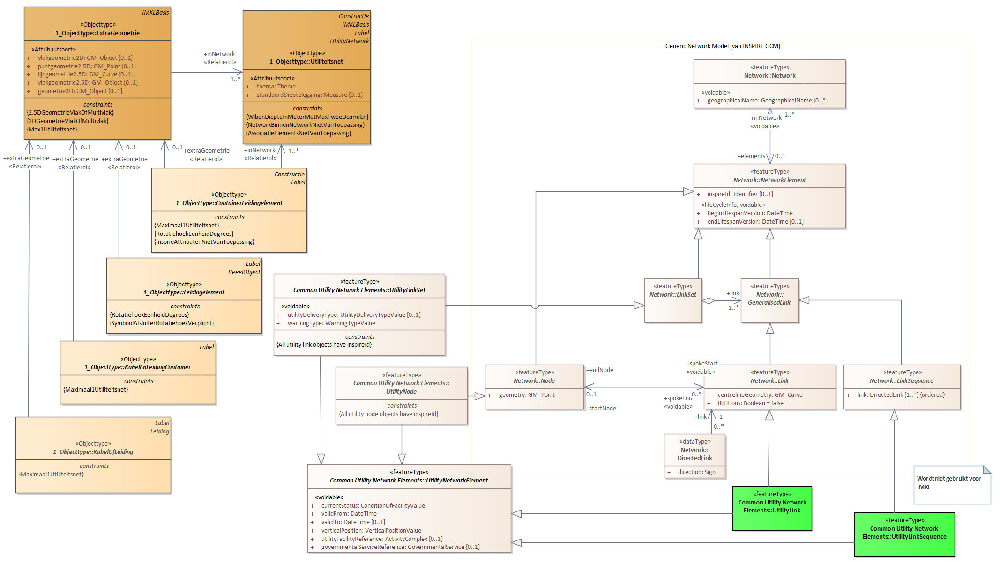
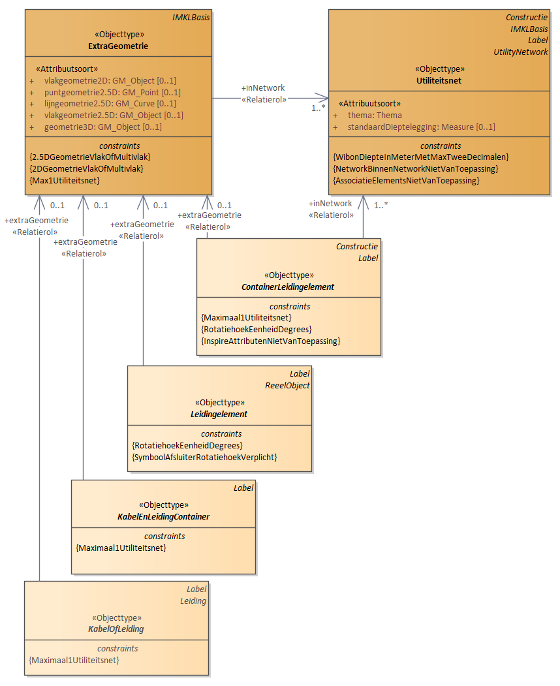
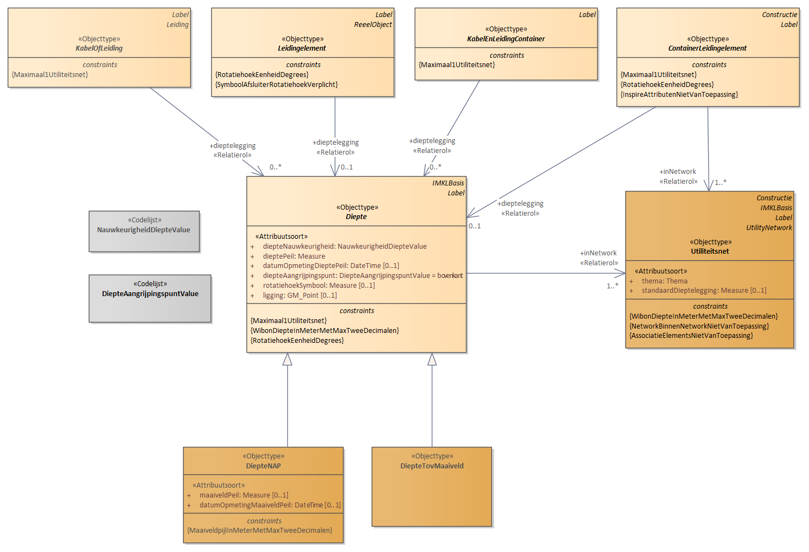
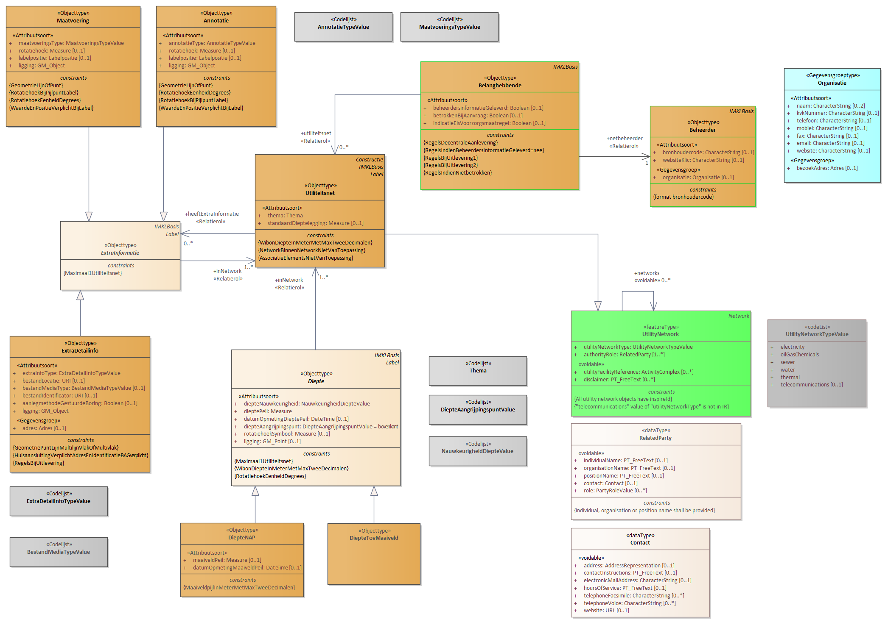
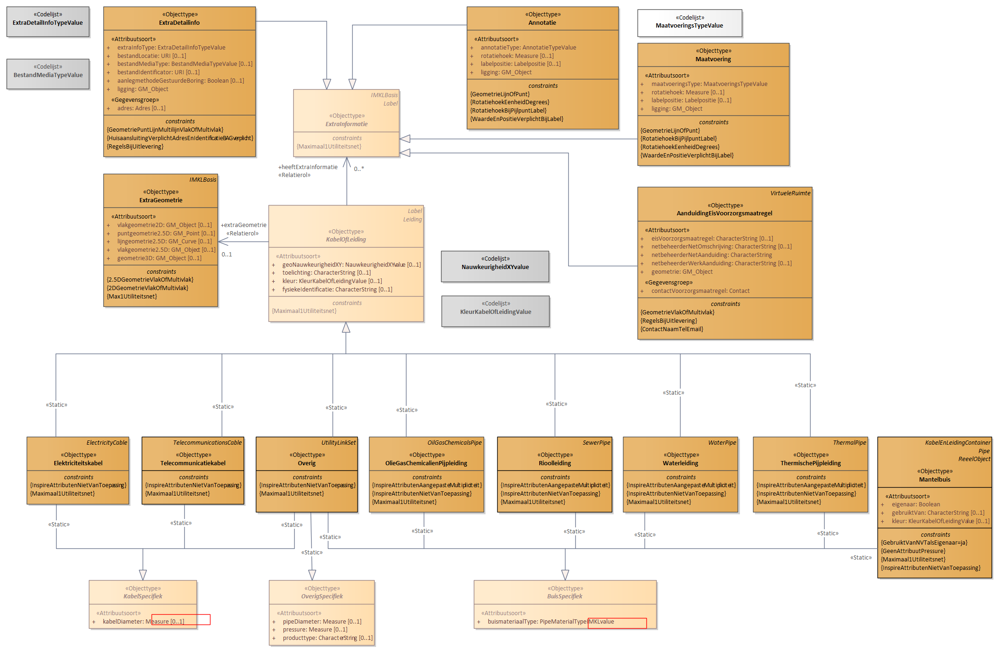
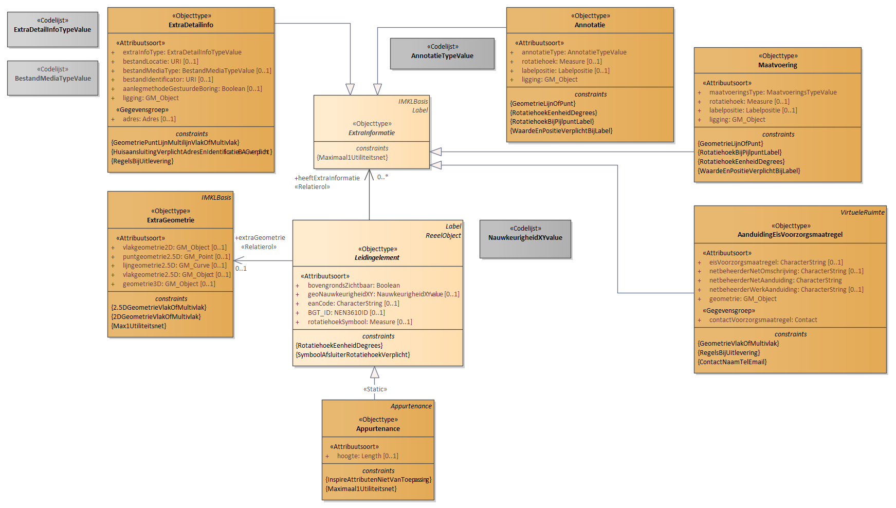
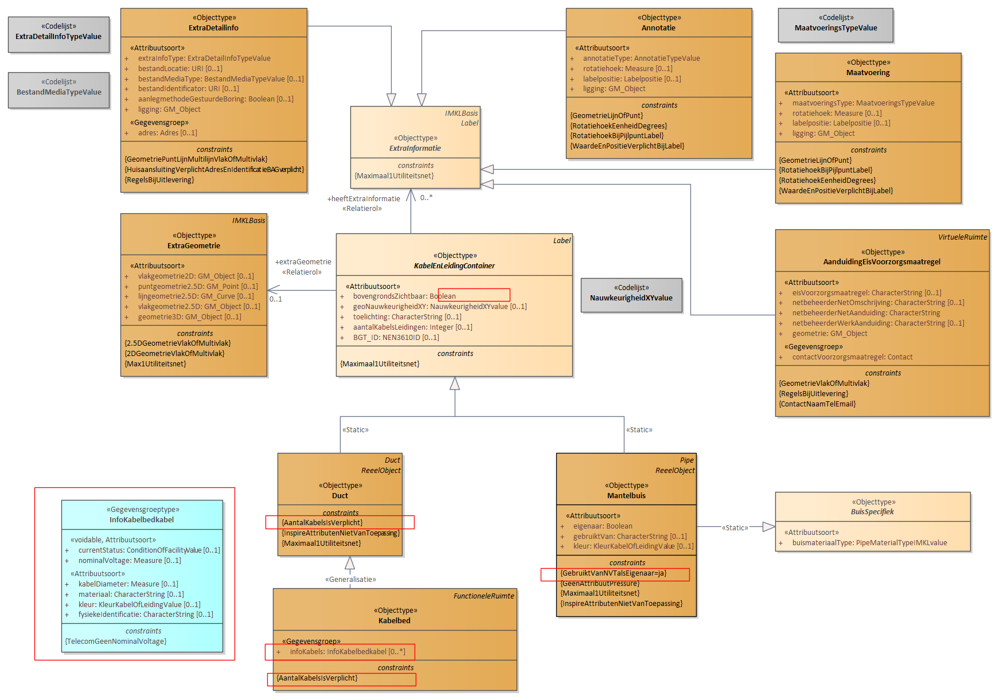
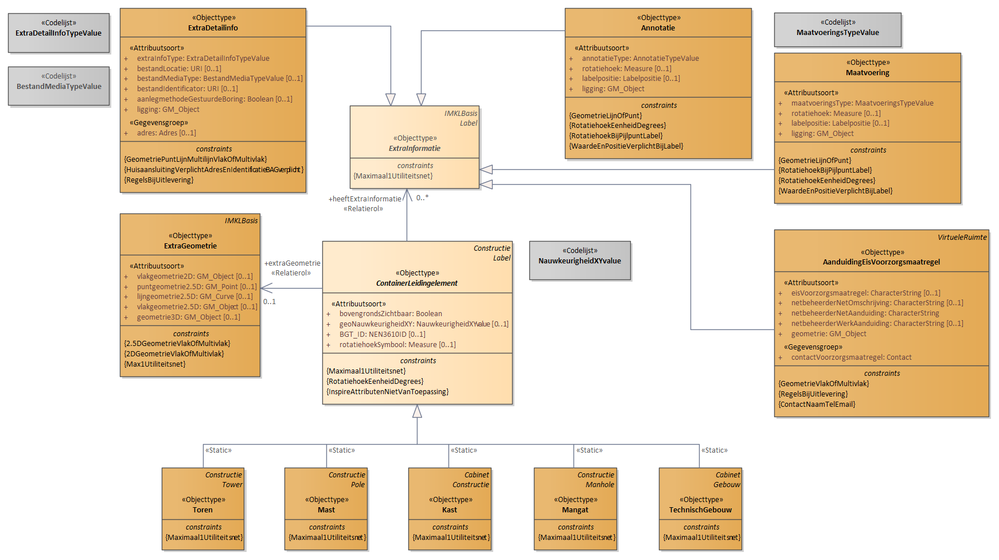
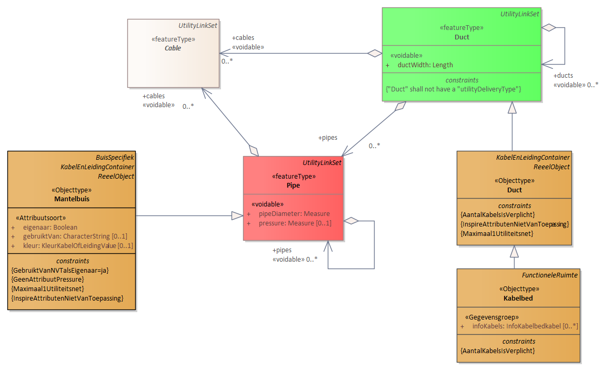

Deze standaard beschrijft de specificaties van het Informatiemodel Kabels en Leidingen (IMKL) versie 3.0.
Voorwoord
Dit document bevat de dataspecificatie ten behoeve van het berichtenverkeer voor
uitwisseling van kabel en leiding informatie van de utiliteitsnetten
elektriciteit, gas en chemie, telecom, water, warmte en afvalwater. Het doel van
deze dataspecificatie is om - aanvullend aan de metadata beschrijving van het
dataproduct (conform ISO 19115) - achtergrondinformatie te verstrekken over een
dataproduct. Waar de metadata de informatie op bestandsniveau beschrijft is de
dataspecificatie bedoeld om de gegevensstructuur en objectdefinities te
beschrijven. Op basis van de dataspecificatie en de metadata van het dataproduct
kan een gebruiker van de gegevens zich een goed beeld vormen van de data die
worden aangeboden en de data inhoudelijk interpreteren. Daarnaast geldt dat
onderdelen van de dataspecificatie nodig zijn ten behoeve van applicatiebouw
voor realisatie van het berichtenverkeer aan de aanbod- en ontvangstzijde.
De IMKL 3.0 standaard omvat een zevental onderdelen waarvan dit het hoofddocument
is. De volgende lijst geeft alle onderdelen:
Informatiemodel Kabels en Leidingen (IMKL): Dit document;
IMKL object-attributen-ExtraRegels (in register.geostandaarden.nl/imkl): Excel-document met alle IMKL objecten, alle attributen en associaties en extra modelregels die daar op van toepassing zijn;
IMKL begrippenkader: Alle termen en definities van IMKL model gepubliceerd in rdf, turtle en json. Termen zijn zowel in Nederlands als in de technische naamgeving. Publicatie daarvan via definities.geostandaarden.nl ;
IMKL Ordening attributen viewer: Volgorde van de presentatie van attributen in een viewer. Gepubliceerd in technisch register/visualisatie/imkl ;
IMKL Technisch register : Technische implementatiebestanden zoals o.a. xml schema, sld, waardelijsten.
Dit document omvat een aantal hoofdstukken. Het hoofdstuk Scope beschrijft het
toepassingsgebied of onderwerp waar deze dataspecificatie op van toepassing is.
Het hoofdstuk Overzicht geeft een informele beschrijving van dit toepassingsgebied en hoe
deze dataspecificatie wordt toegepast in een informatie- en
data-uitwisselingsproces. In dit hoofdstuk zijn ook de normatieve referenties
opgenomen en de lijst met termen, definities en afkortingen. Hoofdstuk Identificatie document is een
korte samenvatting en identificatie van de dataspecificatie in tabelvorm. In het
hoofdstuk IMKL informatiemodel is het UML model opgenomen en wordt met verschillende diagrammen het
informatiemodel toegelicht en wordt verwezen naar de in het hoofdstuk Gegevensdefinitie opgenomen objectcatalogus met alle
modelinformatie in tabelvorm. Het hoofdstuk Referentiesystemen gaat in op het ruimtelijk- en
temporele referentiesysteem waarin gegevens gepubliceerd moeten worden.
Het hoofdstuk Levering geeft de implementatiespecificaties opgenomen in de vorm van
referenties aan XML schema’s. Visualisatie tenslotte, behandelt de specificatie
van de visualisatie van ruimtelijke data in een kaartbeeld.
In A Bijlage: Changelog zijn de modelwijzigingen ten opzichte van de vorige versie opgenomen.
2. Scope
Dit document beschrijft de dataspecificatie IMKL, van het door KLIC ontsloten
dataproduct Utiliteitsnetten.
IMKL geeft de gedetailleerde beschrijving van structuur, inhoud en datakwaliteit
van utiliteitsnetten en dient als basis voor de realisatie en ontsluiting van
KLIC services.
De gebruikstoepassing waar de semantiek van IMKL door wordt bepaald komt voort
uit verschillende wetgevingen, regelingen en processen. Deze zijn:
WIBON: Wet informatie-uitwisseling bovengrondse en ondergrondse netten
en netwerken. Uitwisseling van kabel en leiding informatie ter voorkoming
van graafschade voor de netten: telecom, riolering, water, elektriciteit,
gas en warmte. Inclusief maatregelen uit de Richtlijn kostenreductie
breedband, zijnde de Richtlijn 22014/61/EU, hierna: EC61.
INSPIRE: Europese richtlijn voor uitwisseling van digitale gegevens
gerelateerd aan milieu. Voor deze specificatie in het bijzonder het
thema Utilities en Governmental Services en daarin de Utility Networks.
Dataspecificaties voor uitwisseling kabel en leidingen informatie voor de
netten: datatransport, riolering, water, elektriciteit, gas, warmte en
andere kabels & leidingen.
Noot:
3. Overzicht
3.1 Naam en Acroniemen
IMKL - Dataspecificatie voor Utiliteitsnetten.
3.2 Informele beschrijving
3.2.1 Definitie
Utiliteitsnet: Een verzameling netwerkelementen die tot één type
nutsvoorzieningennet behoren. Omvat voorzieningen voor elektriciteit,
telecommunicatie, gas, chemicaliën, drinkwater, afvalwater en warmte.
3.2.2 Beschrijving
IMKL vormt het gemeenschappelijke begrippenkader voor de uitwisseling van
informatie van verschillende typen utiliteitsnetten. Een utiliteitsnet is daarin
een verzameling netwerkelementen die tot één type nutsvoorzieningennet behoren
en omvat voorzieningen voor elektriciteit, telecommunicatie, gas, chemicaliën,
drinkwater, afvalwater en warmte. In de WIBON wordt een net (is utiliteitsnet)
omschreven als: net: een ondergrondse kabel of leiding, daaronder mede begrepen
lege buizen, ondergrondse ondersteuningswerken en beschermingswerken, bestemd
voor transport van vaste, vloeibare of gasvormige stoffen, van energie of van
informatie. Het utiliteitsnet omvat ook de informatie omschreven in deze
definitie.
Een utiliteitsnet is in eerste instantie de samenstelling van fysieke elementen
die samen het net vormen. Het bestaat uit kabels, leidingen, buizen die nodig
zijn voor het transport van de net-producten zoals energie, water en informatie,
resulterend in bijvoorbeeld elektriciteitskabels, telecomkabels, buisleidingen
voor gas, kerosine en leidingen voor water, warmte of riolering. Het omvat ook
constructies voor het verbinden, verwerken, beschermen, beheren, meten,
controleren van transport en distributienetten. Denk hierbij aan
verbindingsmoffen, drukregelaars, putten, meetstations etc.
Al de utiliteitsnetten zijn opgebouwd uit verbindingen en verbindingspunten die
samen een transportnetwerk vormen. De logica van de netwerken wordt beschreven
middels een topologisch-, of connectiviteitsmodel. IMKL volgt een arc-node
topologie om de logica van het netwerk te kunnen beschrijven. De kern van het
model zit echter in het uitwisselen van de liggingsgegevens van de netten en de
netwerkelementen. Primair gebeurt dat middels centerlijnen voor de locatie van
kabels en leidingen en centerpunten voor leidingelementen. Optioneel is er ook
een vlakken-representatie en een uitbreiding voor driedimensionale
representatie.
Een utiliteitsnet wordt beschreven door de ligging en topologie van de
netelementen maar ook door beschrijvende informatie over type utiliteitsnet (het
thema), verantwoordelijke organisaties, type product, type leiding en velerlei
relevante directe, gerelateerde of afgeleide kenmerken en eigenschappen.
Uitgangspunten toegepast bij het modelleren van IMKL:
Het informatiemodel INSPIRE Utility networks staat centraal in de modellering van de overige
producten.
INSPIRE Utility networks is gedefinieerd in Engelstalige syntax. De NL
modellen gaan uit van een Nederlandse syntax. De relatie tussen Engelse en
Nederlandse syntax wordt in IMKL gelegd.
IMKL beschrijft ‘eindproducten’ van de informatie-uitwisselingsketen. Het
bevat geen informatie gerelateerd aan de architectuur van het KLIC systeem.
IMKL is niet van invloed op het type voorziening, centraal, decentraal of
hybride.
IMKL voorziet in een objectgerichte, gevectoriseerde data-uitwisseling.
Afhankelijk van het type informatieproduct kan IMKL toegepast worden in een
view service (WMS) en of download service (WFS of Atom feeds). WFS/WMS is
alleen van toepassing op het informatieproduct INSPIRE UN
IMKL past waar nodig, optioneel, 3D geometrie toe. De 3D geometrie is een
optionele extensie die geen invloed heeft op de 2D modellering.
Voor 3D modellering wordt zoveel als mogelijk afgestemd met CityGML-Utility
extensie. In dat proces wordt ook gekeken naar aanpassingen aan
CityGML-Utility. INSPIRE Utility networks is leidend in die afstemming.
IMKL bevat temporele informatie.
IMKL-wibon bevat ook de informatie van geplande netwerkelementen.
IMKL-wibon bevat ook, indien relevant en aanwezig, de informatie van
huisaansluitingen, gestuurde boringen, mogelijke detailkaart. Indien alleen
aanwezig in rasterformaat worden ze in dat formaat meegeleverd.
IMKL-wibon differentieert informatie naar aanlevering door netbeheerders en
naar uitlevering door de centrale voorziening (KLIC).
Het volgende figuur schetst de data-uitwisseling voor realisering van het WIBON
en INSPIRE Utilities voorzieningen. Het figuur is ter illustratie en niet
normatief voor de implementatie van de voorziening. Een onderscheid wordt
gemaakt tussen data-uitlevering en data-aanlevering. Data-uitlevering betreft
het leveren van data aan de uiteindelijke afnemers, de eindproducten.
Data-aanlevering is de data stroom van netbeheerders die nodig is om
tussenproducten of voorzieningen te realiseren die met die gegevens instaat zijn
om de eindproducten te realiseren. Voor KLIC geldt dat er vier
gegevensuitwisseltrajecten zijn:
Decentraal aangesloten Netbeheerder (A): Aanlevering van netinformatie
aan KLIC per aanvraag voor doorlevering aan aanvrager.
Centraal aangesloten Netbeheerder (B): Aanleveren totaal netinformatie
voor actualisatie van de centrale voorziening.
Decentrale en Centrale Netbeheerder: Registreren en actualiseren van de
Belangenregistratie.
WIBON Uitlevering: Uitleveren van gebiedsinformatie aan grondroerder.
(graafpolygoon e.d.) inclusief bijbehorende aanvraag en leveringsinformatie.
Figuur 1Data-uitwisselarchitectuur. Illustratief figuur van
data-uitwisseling voor realisatie van WIBON en INSPIRE voorziening. IMKL
beschrijft de semantiek van de eindproducten in de data-uitlevering en geeft ook
specificaties voor de inhoud van de data-aanlevering van decentraal (A) en
centraal aangesloten netbeheerder (B) aan de voorziening. Het BMKL is het
protocol voor het berichtenverkeer. Dit wordt in een aparte specificatie
beschreven.
Lijst van termen en definities die in deze beschrijving worden gehanteerd.
annotatie elke toevoeging op een kaartbeeld voor verduidelijking
applicatieschema informatiemodel dat gegevens beschrijft die worden gebruikt door een of meer applicaties OPMERKING IMKL is met UML beschreven in een applicatieschema.
associatie of relatie (UML) semantische relatie tussen twee of meer klassen die de connectie tussen hun instanties weergeeft
attribuut kenmerk van een object
attribuutwaarde (value) waarde die een attribuut aanneemt
coördinaat getal in een sequentie van n getallen om de positie van een punt in een n-dimensionale ruimte te bepalen
coördinaatreferentiesysteem coördinaatsysteem dat aan een object is gerelateerd door een datum.
coördinaatsysteem set van wiskundige regels voor het toekennen van coördinaten aan punten
datatype gestructureerde gegevens zonder identiteit
datum parameter of set van parameters voor het definiëren van het nulpunt, de schaal en de oriëntatie van een coördinaatsysteem
diepte afstand van een punt tot een gekozen referentievlak neerwaarts gemeten langs een lijn welke loodrecht op dat referentievlak staat.
download service service that enables copies of spatial data sets, or parts of such sets, to be downloaded and, where practicable, accessed directly. INSPIRE
extensie (van informatiemodel) een informatiemodel als uitbreiding op een ander informatiemodel
geo-informatie (geo-information, geographic information) informatie met een directe of indirecte referentie naar een plaats ten opzichte van de aarde (bijvoorbeeld ten opzichte van het aardoppervlak)
OPMERKING Geo-informatie is synoniem aan geografische informatie.
geo-object (geographic feature type, feature class) abstractie van een fenomeen in de werkelijkheid dat direct of indirect is geassocieerd met een locatie relatief ten opzichte van de aarde (bijvoorbeeld ten opzichte van het aardoppervlak)
georeferentie (georeference) locatie van een ruimtelijk object vastgelegd in een ruimtelijk referentiesysteem
informatiemodel (conceptual model, conceptual scheme) formele definitie van objecten, attributen, relaties en regels in een bepaald domein
OPMERKING Domein is in dit verband: een kennisgebied of activiteit gekarakteriseerd door een verzameling van concepten en begrippen
instantie (instance, occurrence) benoemd, identificeerbaar object uit een objectklasse
label tekst of getal dat een eigenschap omschrijft of kwantificeert en als annotatie op een kaartbeeld wordt afgebeeld
namespace collectie van namen die in XML documenten gebruikt worden als element en attribuutnamen
OPMERKING Een namespace wordt geïdentificeerd door een URI.
netwerk service application running at the network application layer and above, that provides data storage, manipulation, presentation, communication or other capability which is often implemented using a client-server or peer-to-peer architecture based on application layer network protocols (Wikipedia)
netwerktopologie
beschrijving van de plaats van de knooppunten en de onderlinge verbindingen in een netwerk
objectklasse (feature class) verzameling van objecten met dezelfde eigenschappen
presentatie presentatie van informatie aan mensen
OPMERKING Presentatie van informatie door visualisatie, hoorbaar maken, tastbaar maken (tactiel) of combinaties hiervan.
productmodel informatiemodel afgeleid van een ander informatiemodel om de toepassing in een dataproduct te realiseren
registratie op nationaal niveau geïdentificeerde en erkende gegevensverzameling
OPMERKING Een basisregistratie is een registratie.
registratiehouder organisatie verantwoordelijk voor het houden van de registratie
OPMERKING de registratiehouder is de organisatie die unieke objectidentificaties toekent voor objecten in een registratie
representatie inhoudelijk vastleggen van de werkelijkheid.
OPMERKING Het informatiemodel is een representatie van de werkelijkheid.
ruimtelijk referentiesysteem model (systeem) voor identificatie van een positie (locatie) in de werkelijkheid
OPMERKING Identificatie van een positie kan door coördinaten (directe locatie) en door geografische identificatoren (indirecte locatie).
sectormodel
model voor beschrijving van de werkelijkheid binnen het domein van een beleidsveld
symbool presentatieprimitieve van grafische, audio of tactiele aard of een combinatie hiervan
temporeel referentiesysteem referentiesysteem waarin de tijd is bepaald.
rasterformaat representatie van beeld middels een gewoonlijk rechthoekig patroon van parallelle lijnen
vectorformaat representatie van geometrie middels geometrische primitieven
view service service that makes it possible, as a minimum, to display, navigate, zoom in and out, pan or overlay viewable spatial data sets and to display legend information and any relevant content of metadata. INSPIRE
void (en) object, of kenmerk van een object, dat syntactisch of semantisch is vereist,
maar dat in de gegeven instantie geen informatie bevat
waardelijst lijst van waarden
werkelijkheid beeld van de echte of hypothetische wereld die alles van belang omvat
3.5 Symbolen en afkortingen
Lijst van afkortingen en acroniemen die worden gehanteerd in deze data
specificatie.
BAG Basisregistratie Adressen en Gebouwen
BevB Besluit externe veiligheid Buisleidingen
BGT Basisregistratie Grootschalige Topografie
BOMOS Beheer- en ontwikkelmodel Open Standaarden
EC61 EU richtlijn voor een Verordening van het Europees Parlement en Raad over maatregelen om de kosten van de aanleg van elektronische hogesnelheidscommunicatienetwerken te verlagen
GML Geography Markup Language
INSPIRE Infrastructure for Spatial Information in Europe De INSPIRE-richtlijn verplicht de Europese lidstaten geo-informatie over 34 thema's te voorzien van metadata, te harmoniseren en beschikbaar te stellen via het INSPIRE-portaal volgens leveringsvoorwaarden die het gebruik niet onnodig belemmeren.
INSPIRE UN INSPIRE thema Utility Networks. Nutsvoorzieningen zoals bijvoorbeeld riolering, afvalbeheer, energievoorziening, watervoorziening
RRGS Risico Register Gevaarlijke Stoffen
UML Unified Modeling Language
WFS Web Feature Service
WIBON Wet Informatie-uitwisseling Bovengrondse en Ondergrondse netten
WMF Web Mapping Service
XML Extensible Markup Language
4. Identificatie document
Dit hoofdstuk beschrijft de identificatie van de dataspecificatie.
In onderstaande tabel is de beschrijvende informatie opgenomen van het
dataspecificatie.
Titel
Informatiemodel Kabels en Leidingen (IMKL)
Samenvatting
IMKL beschrijft de semantiek van digitale bestanden van utiliteitsnetten. De netten worden getypeerd aan de hand van producten of thema’s: elektriciteit, gas en chemie, drinkwater, afvalwater, telecom en warmte. Netten zijn opgebouwd uit netwerkelementen zoals kabels, leidingen, buizen en verbindende componenten genaamd leidingelementen zoals moffen, schakelkasten, aansluitingen, pompen. Het geheel van deze netwerkelementen vormt een netwerk waarvan de topologie wordt beschreven en de directe geografische positie middels coördinaten.
Onderwerp categorieën
Geografische beschrijving
Nederland
Doel (optioneel)
Doel van dit document is het beschrijven van dataproduct IMKL ten behoeve van KLIC. IMKL is ontwikkeld voor de realisatie van digitaal berichtenverkeer rond het thema utiliteitsnetten en de daarin voorkomende kabels, leidingen en leidingelementen voor de realisatie van een aantal wetten en regelingen. Met name de wet WIBON en de Europese regeling INSPIRE en daarin het thema Utility Networks zijn bepalend.
Aanvullende informatie (optioneel)
5. IMKL informatiemodel
Dit hoofdstuk beschrijft het datamodel van utiliteitsnetten. Aan de hand van UML
klassediagrammen wordt het model beschreven.
5.1 Inleiding
In de volgende paragrafen wordt de inhoud en structuur van het IMKL beschreven
middels UML diagrammen en een bijbehorende objectcatalogus.
Het eerste gedeelte van dit hoofdstuk bevat de UML diagrammen van alle
deelmodellen. Schematisch is opgenomen wat de informatie-inhoud is middels
objecten, hun attributen, datatypen, relaties tussen objecten met alle detail
dat nodig is voor een eenduidige beschrijving. Van elk deelmodel is een compleet
diagram opgenomen waarna in verschillende subparagrafen elke keer een deel in
een apart diagram wordt toegelicht. Sommige onderwerpen hebben een aparte
toelichting nodig; deze worden in de titel aangeduid met ‘Extra toelichting’.
Het tweede gedeelte bevat de objectcatalogus met in tabelvorm dezelfde
informatie als de diagrammen maar nu middels taal beschreven. Alle
informatie-elementen zijn daarbij voorzien van definities en indien nodig een
toelichtende beschrijving. De objectcatalogus bevat de gezamenlijke
informatie-inhoud van alle deelmodellen.
5.2 UML diagrammen
5.2.1 Beschrijving algemeen principe: IMKL als extensie op INSPIRE
IMKL is gemodelleerd als een extensie op het model voor het INSPIRE thema
Utility and Governmental Services. Binnen dat INSPIRE thema zijn alleen de
modellen voor utiliteitsnetten (utility networks) van belang voor IMKL. IMKL
neemt de hele inhoud over van de INSPIRE specificatie en voegt daar de
specifieke informatie aan toe die nodig is voor realisatie van de in de scope
genoemde processen. Met IMKL kan daardoor een dataset geleverd worden of
dataservice worden ingericht die INSPIRE conform is en voorziet in het detail
van de eisen van de genoemde processen. Er is hierbij opgemerkt dat IMKL als een
modelmatige extensie van de INSPIRE niet betekent dat de in IMKL geleverde data
automatisch INSPIRE data zijn. Dit geldt zeker voor thema’s die niet
INSPIRE-plichtig zijn.
Het volgende diagram geeft de relatie tussen IMKL en de verschillende INSPIRE modellen. IMKL is
een uitbreiding op het INSPIRE Utility Networks model waarin voor de netten
elektriciteit, olie-gas-chemicalien, afvalwater, telecomunicatie, warmte en
drinkwater aparte modellen zijn opgenomen. Deze modellen zijn toepassingen van
het INSPIRE netwerkmodel waarin opgenomen een model voor topologie. Het
netwerkmodel is onderdeel van het INSPIRE Generic Conceptual Model,
basismodellen en basistypen die generiek zijn voor alle INSPIRE thema modellen.
IMKL is een apart pakket met bijbehorende namespace dat gebruik maakt van de
door INSPIRE beheerde pakketten. Een namespace is daarbij gedefinieerd als een
unieke aanduiding voor het domein waarbinnen de informatie-elementen
gedefinieerd zijn. In IMKL zijn afspraken gemaakt over te gebruiken namespaces
en afkortingen hiervoor. De namespace voor IMKL is ‘IMKL’.
Figuur 2Een UML package diagram van de relatie tussen IMKL en de INSPIRE
dataspecificaties. Elk pakket bevat de informatie die op dat niveau wordt
toegevoegd. Het pakket IMKL is een extensie op het INSPIRE model voor Utility
Networks. INSPIRE utilities heeft afhankelijkheden met het INSPIRE algemene
netwerkmodel en INSPIRE basistypen. IMKL omvat het totaal van de aan elkaar
gerelateerde pakketten.
5.2.2 Metamodel
IMKL gebruikt het Metamodel voor Informatiemodellering, MIM. Omdat IMKL een extensie is van het INSPIRE Utility Networks is het INSPIRE metamodel, het INSPIRE Generic
Conceptual Model, ook van toepassing. Beide metamodellen zijn in deze toepassing met elkaar vergelijkbaar.
Een applicatie schema volgens ISO 19109 en NEN 3610.
featureType
Class
Een geografisch object.
dataType
Class
Een gestructureerd data type zonder identiteit.
union
Class
Een gestructureerd data type zonder identiteit waarvan precies één van de attributen aanwezig is in een instantie.
enumeration
Class
Gesloten lijst van domeinwaarden.
codeList
Class
Open lijst van domeinwaarden
voidable
Attribute, association role
Om aan te geven dat het attribuut of associatierol een nullwaarde kan hebben. Een reden waarom het attribuut niet ingevuld is.
5.2.3 UML - WIBON overzicht
Het onderstaand UML diagram bevat het complete IMKL – WIBON inclusief de relatie
met INSPIRE Utilities. In de hierop volgende paragrafen wordt telkens een deel
van het diagram toegelicht.
Kleurgebruik in diagrammen:
Oranje: IMKL objecttypen.
Rood: INSPIRE Utility Networks per type kabel of leiding
Groen en grijs: INSPIRE Utility Networks algemeen
Licht oranje en grijs: Niet-instantieerbare objecttypen, datatypen en
waardelijsten.
In de diagrammen onderdelen die gewijzigd zijn ten opzichte van de IMKL 2.0 versie
met rode kaders aangegeven.
Link met objectcatalogus. De modelelementen in het UML diagram zijn klikbaar en verwijzen naar de beschrijving van de metagegevens in de objectcatalogus in het hoofdstuk Gegevensdefinitie.
Indicatie aanlevering en uitlevering. Voor WIBON geldt dat er een verschil is tussen het dataverkeer tussen de
centrale voorziening en de afnemers, de uitlevering, en het dataverkeer tussen
de netbeheerders en de centrale voorziening, de aanlevering. Bij de
netbeheerders geldt vervolgens dat er een verschil is tussen de centraal
aangesloten netbeheerders en de decentraal aangesloten netbeheerders. Deze
verschillende zijn in de diagrammen aangegeven.
Rood omlijnd: gegevens die door de centrale voorziening worden gegenereerd.
Komen alleen voor in uitlevering.
Groen omlijnd: gegevens die voor de centraal aangesloten netbeheerder door
de voorziening wordt gegenereerd. Decentraal aangesloten netbeheerders
moeten deze gegevens per melding aan de centrale voorziening leveren.
Bij objecttypen is met constraints aangegeven indien er verschil is met
betrekking tot aan- of uitlevering of een decentraal of centraal aangesloten
netbeheerder.
Het UML diagram brengt het IMKL – WIBON voor netinformatie inclusief de relatie
met INSPIRE in beeld. De specifiek voor de andere deelmodellen opgenomen
informatie zit hier nog niet in. Ook de WIBON gebiedsinformatie, graafpolygoon
en belangenregistratie zijn niet opgenomen (zie daarvoor paragraaf WIBON uitleveren van gebiedsinformatie). Voor
de leesbaarheid zijn een aantal relaties niet opgenomen. In de detaildiagrammen
komen die wel terug. Met omlijningen zijn onderdelen van het diagram benoemd:
IMKL en INSPIRE Generic Network Model. Aan de bovenzijde bevindt zich de IMKL
toevoeging op het INSPIRE Utilities model. Aan de onderzijde het INSPIRE
Utilities model. De koppelingslaag is via de IMKL objecttypen die zich in het
midden bevinden: Elektriciteitskabel, Telecommunicatiekabel, Waterleiding tot en
met TechnischGebouw. Deze objecttypen zijn 1 op 1 gerelateerd aan de overeenkomstige
objecttypen uit INSPIRE Utilities. IMKL:Elektricteitskabel aan
INSPIRE:ElectricityCable, IMKL:Waterleiding aan INSPIRE:WaterPipe enz. Ze
bevatten daarmee alle INSPIRE eigenschappen en relaties van die objecttypen. De
IMKL koppelingslaag is ook gekoppeld aan de IMKL inhoudelijke informatie. Deze
is gemodelleerd in de objecttypen KabelOfLeiding, Leidingelement en de
containerversies van beide.
De objecttypen in de IMKL koppelingslaag (Elektricteitskabel, Waterleiding enz)
vormen de centrale objecten in een IMKL dataset. Via overerving en relaties
worden alle eigenschappen toegevoegd, hetzij van de INSPIRE zijde van het model,
hetzij van de IMKL zijde van het model. Als voorbeeld het attribuut geometrie
van een waterleiding. Deze is gedefinieerd als centreLineGeometry bij het
objecttype Link uit het Generic Network Model. Via UtilityLinkSet wordt dat
overgeërfd door het objecttype Pipe, vervolgens doorgegeven aan WaterPipe
waardoor het bij de IMKL waterleiding komt. Een ander voorbeeld is het attribuut
UtilityDeliveryType bij het INSPIRE objecttype UtilityLinkSet. Overerving is
door alle kabel-, buis- en ducttypen.
5.2.4 Associaties in het model
In het model zijn associaties opgenomen om de relatie tussen objecttypen te
benoemen. In het IMKL gedeelte zijn regels opgenomen voor het bepalen van de
richting waarin de associaties zijn bepaald:
Elke associatie wijst één kant op. Er zijn dus geen inverse associaties. Als
er een verwijzing naar beide kanten nodig is worden er twee associaties
opgenomen;
Elk objecttype in IMKL verwijst direct naar het utiliteitsnet waar het bij
hoort. Dit gebeurt in alle gevallen met een associatierol genaamd inNetwork.
Dat geldt ook voor objecttypen als Annotatie, Maatvoering, Bijlage en
dergelijke. Informatie technisch is het mogelijk dat sommige objecttypen bij
meerdere utiliteitsnetten horen, bijvoorbeeld een door verschillende netten
gedeelde mantelbuis, of een dieptemarkering. De associatierol inNetwork is
daarom 1..*. Echter vanuit operationeel punt bezien is dat niet wenselijk.
Met een constraint (‘Max1Utiliteitsnet’) is daarom in alle gevallen het
maximaal aantal utiliteitsnetten waarnaar verwezen kan worden beperkt tot 1.
Voor netwerkelementen geldt dat associaties verwijzen naar de objecten
ExtraInformatie en Diepte die er bij horen en niet andersom.
5.2.5 Numerieke waarden
Numerieke waarden bij attributen worden opgenomen conform de bij het attribuut
opgegeven eenheid en nauwkeurigheid. Indien de waarde als label is opgenomen en
dus een alfanumeriek datatype heeft geldt de komma als decimaal scheidingsteken.
Voor de in specifieke datatypen gedefinieerde waarden geldt een punt als het
afgesproken decimaal scheidingsteken. De specifieke datatypen voor waarden zoals
Measure bestaan uit een combinatie van een waarde en een eenheid.
5.2.6 Waardelijsten zijn extern
De opgenomen waardelijsten van het type «Codelijst» worden niet in het UML
beheerd maar in externe waardelijsten. Zij worden gepubliceerd in een
waardelijstregister. Ze maken wel onderdeel uit van IMKL maar omdat ze
dynamischer zijn voor wat betreft het inhoudelijk beheer zijn ze uit de UML
beschrijving gehaald.
5.2.7 Basisattributen voor identificatie en labels
Identificatie: Alle concrete objecttypen en daarmee objecten in een dataset
hebben een attribuut voor identificatie. Met deze identificatie kunnen ze uniek
geïdentificeerd worden. INSPIRE gebruikt hiervoor het attribuut identifier met
het datatype Identifier. Veel objecttypen uit IMKL overerven die attributen.
Voor objecttypen die specifiek voor IMKL zijn gecreëerd en die niet via een
generalisatie aan INSPIRE zijn gekoppeld is er een attribuut identificatie met
het datatype NEN3610ID. Zie ook paragraaf Identifier management.
Label: Label is een abstract datatype dat is gecreëerd om middels overerving aan
bijna alle objecten een mogelijkheid voor het toekennen van een label te bieden.
Merk op dat voor annotatie en maatvoering (ExtraInformatie) en diepte,
bijbehorende labels via het object Label doorgegeven worden. Het af te beelden
label (getal of tekst) wordt opgenomen bij het attribuut label. Vanuit praktisch
punt is het maximaal aantal karakters van een label op 40 gezet. In het
attribuut omschrijving kan een betekenis worden opgenomen. Bij de subklassen
Maatvoering, Annotatie en Diepte is het plaatsingspunt van een label bepaald met
een attribuut ligging. Bij andere subklassen, bijvoorbeeld de netelementen wordt
de plaatsing van een eventueel label in een viewer bepaald.
Voidable: Bij attributen en associaties die het stereotype «voidable»
hebben kan, indien het van toepassing is, geen waarde worden ingevuld. Optioneel
kan er ook een reden opgenomen worden waarom er geen waarde is ingevuld. De
benoemde redenen zijn:
Unknown: Waarde onbekend: De waarde is bij de zender niet bekend.
Unpopulated: Niet ondersteund: De zender houdt in zijn registratie geen
waarde voor dit attribuut bij. Geldt voor alle objecten van dit objecttype.
Withheld: Niet geautoriseerd: De zender vindt dat de ontvanger niet
geautoriseerd is om de waarde te kennen. Waarde is vertrouwelijk en wordt niet uitgewisseld.
Figuur 5Basistypen van het model: Identificatie en label. Alle objecttypen
hebben verplicht een identifier. Bijna alle objecten hebben optioneel een label.
LifespanVersion: In de basistypen van het model zitten twee attributen voor een
temporeel model: beginLifesepanVersion en endLifespanVersion. INSPIRE kent die
attributen ook en past die toe bij het objecttype NetwerkElement. In IMKLBasis
zijn ze toegevoegd voor die objecttypen die niet van INSPIRE overerven.
beginLifespanVersion is daarin de begindatum waarop deze versie van een data
object in de registratie werd aangemaakt of veranderd; het begin van de
levenscyclus van deze versie van een data object. endLifespanVersion is de datum
die het einde van een levenscyclus van deze versie van een data object aangeeft;
het moment vanaf wanneer het geen onderdeel meer is van de actuele registratie.
Zie ook paragraaf Tijd representatie en temporeel model.
5.2.8 IMKL semantische kern
De kern van het IMKL model bevat de semantiek van de extra informatie voor de
Nederlandse gebruikstoepassingen. Alleen de objecttypen die de inhoudelijke IMKL
informatie bevatten en die extra aan het INSPIRE Utility networks model zijn
toegevoegd zijn afgebeeld. Bijvoorbeeld geometrie en netwerktopologie zitten in
INSPIRE Utility networks en zijn niet afgebeeld.
Figuur 6IMKL semantische kern voor WIBON toepassing. Een utiliteitsnet
bestaat uit elementen. De elementen hebben attributen en een link met extra
informatie.
Toelichting bij het diagram: Een Utiliteitsnet bestaat uit objecten
KabelOfLeiding, Leidingelement, KabelEnLeidingContainer en
ContainerLeidingelement. Via het associatie attribuut inNetwork worden deze
gerefereerd aan één Utiliteitsnet van één thema. Deze associatie is alleen
zichtbaar bij ContainerLeidingelement. De andere netwerkobjecten hebben die
associatie via het INSPIRE Netwerk model. Alle objecten hebben kenmerken. De
objecttypen kunnen uitgebreid worden met ExtraInformatie. Dit kan annotatie,
maatvoering en/of extra bestanden zijn. Al deze typen vallen onder de
superklasse ExtraInformatie en worden vanuit de andere objecten gerefereerd via
het attribuut heeftExtraInformatie. Omdat alle elementen van en in een
Utiliteitsnet middels het associatie attribuut inNetwork refereren aan het
Utiliteitsnet is typering van alle elementen mogelijk op waarden van het
attribuut thema. Alle elementen kunnen daarmee per thema geselecteerd worden.
Maximaal 1 utiliteitsnet per netelement.
ContainerLeidingelementen en KabelEnLeidingContainers (Kabelbed, Mantelbuis en
Duct) kunnen in de werkelijkheid bij meerdere utiliteitsnetten geregistreerd
zijn. Dat geldt dan natuurlijk ook voor objecten die daaraan zijn geassocieerd,
zoals ExtraInformatie en Diepte. Het IMKL model dwingt met een aparte constraint
(Max1Utiliteitsnet) af dat in de datauitwisseling een netelement altijd naar
maximaal 1 utiliteitsnet kan verwijzen. Het kan daarmee voorkomen dat in een
totaalset van een WIBON uitlevering elementen dubbel zijn opgenomen.
Bijvoorbeeld een gedeelde mantelbuis komt zowel in het telecomnet als in het
waternet voor.
Een Utiliteitsnet wordt gerefereerd door een Belanghebbende, deze heeft een
belang in een WIBON aanvraag. De Belanghebbende kan verwijzen naar een object
EigenTopografie voor het koppelen van een extra toegevoegde topografie.
Extra toelichting: ExtraDetailinfo, maatvoering, annotatie.
Een utiliteitsnet of individuele netelementen kunnen via het attribuut
heeftExtraInformatie verwijzen naar extra informatie van toepassing op dat
element. Extra informatie kan in de vorm een gekoppeld bestand, maatvoering,
annotatie of een eis voorzorgsmaatregel.
Annotatie:
Pijlen, lijnen en labels die als annotatie op een kaartbeeld staan en niet als
maatvoering gelden worden met het object Annotatie opgenomen. Met het attribuut
ligging wordt de geometrie van de annotatie aangegeven of de plaatsingspunt van
het label. De tekst en eventueel betekenis van het label worden via het object
Label opgenomen.
Het uitwisselen van annotatie gebeurt alleen daar waar de bronhouder het nodig
vindt om deze informatie als annotatie op te nemen. Annotatie objecten zijn
zelfstandige objecten die middels een associatie aan een Utiliteitsnet zijn
verbonden en optioneel ook gerefereerd worden door het netelement waar ze
betrekking op hebben. Annotatie bevat in veel gevallen de informatie die ook bij
de netelementen zelf opgenomen kan worden maar in de bronbestanden niet als
gekoppelde informatie is opgenomen. De verwachting is dat het gebruik van
annotatie als bron van informatie in de toekomst afneemt en de object gekoppelde
en opvraagbare informatie toeneemt.
ExtraDetailinfo:
Extra detailinformatie in de vorm van bestanden kan optioneel aan een
utiliteitsnet of netelement worden gekoppeld via het attribuut
heeftExtraInformatie. Bestanden kunnen verschillende typen informatie
beschrijven zoals een aansluiting, huisaansluiting of een profielschets met een
lengte- of dwarsprofiel (zie ook paragraaf Leidingelement). Het bestandstype moet worden
gespecificeerd en is in alle gevallen pdf.
Met het verplichte attribuut ligging wordt de locatie aangegeven waar de
detailinformatie van toepassing is. In een viewer kan die locatie dan
gevisualiseerd worden.
Maatvoering:
Maatvoering wordt gebruikt om de positie van een netwerkelement ten opzichte van
aanwezige bebouwing weer te geven. Als maatvoering is opgenomen dan zijn die
gegevens leidend irt de afstanden die uit de coördinaten berekend kunnen worden.
De annotatietypen voor maatvoering zijn: maatvoeringshulplijn, maatvoeringslijn,
maatvoeringspijl, maatvoeringspijlpunt of maatvoeringslabel. Een
maatvoeringspijlpunt wordt middels een puntsymbool uitgewisseld.
Waarde
Omschrijving
maatvoeringshulplijn
Lijn om een hulplijn in een maatvoering te visualiseren
maatvoeringslijn
Lijn om een lijn in een maatvoering te visualiseren
maatvoeringslabel
Punt en label om een label in een maatvoering te visualiseren
maatvoeringspijlpunt
Punt om een pijlpunt in een maatvoering te visualiseren. Is een punt met een bijbehorend puntsymbool
maatvoeringspijl
Lijn met aan beide kanten een pijlpunt
Elke maatvoeringslijn wordt een apart object.
Het maatvoeringslabel geeft met een label-attribuut het label aan dat als
maatvoeringsgetal wordt afgebeeld. Bijvoorbeeld ‘25’. Overeenkomstig NEN 3116 is
de eenheid meter en de gebruikelijke nauwkeurigheid is 0,1. Het decimale
scheidingsteken is een komma. Het attribuut label wordt via het object
ExtraInformatie overerft van het object Label. In het attribuut omschrijving van
het object Label kan indien nodig een nadere omschrijving worden opgenomen, zie
Figuur IMKL-Basisinformatie. De locatie van het label en de geometrie van de maatvoeringslijnen
wordt met het attribuut ligging opgenomen. Maatvoering is direct gekoppeld aan
een Utiliteitsnet. Hierdoor kan middels het thema attribuut van Utiliteitsnet de
maatvoering per thema worden geselecteerd.
Extra toelichting: Eis voorzorgsmaatregel en Bijlage.
Een eis voorzorgsmaatregel geeft aan dat de beheerder van een net aangegeven
heeft dat er sprake is van voorzorgsmaatregelen die getroffen dienen te worden.
Dit betreft alleen de wettelijk geregelde eis voorzorgsmaatregel. Bij een WIBON
uitlevering wordt – per thema - de voorzorgsmaatregel met de hoogste prioriteit
bijgesloten middels een gekoppeld separaat bestand beschreven in
EisVoorzorgsmaatregelBijlage. Van deze bijlage wordt vastgelegd op welk thema
deze betrekking heeft en de te nemen eis voorzorgsmaatregel. De bijlage behoort
bij een Belanghebbende netbeheerder. Op het niveau van de individuele
netelementen is de eis voorzorgsmaatregel aangegeven via een object
AanduidingEisVoorzorgsmaatregel. In dat geval is het netelement en of de locatie
aangegeven waar een voorzorgsmaatregel geldt.
Standaard wordt de geometrie van het object AanduidingEisVoorzorgsmaatregel
gebruikt om aan te geven op welke kabel of leiding of deel daarvan een
voorzorgsmaatregel van toepassing is. De begrenzing van de geometrie is dan om
dit te visualiseren en eenvoudig ruimtelijke selecteerbaar te maken.
De aanduiding van een eis voorzorgsmaatregel is functioneel gerelateerd aan een
kabel of leiding maar een directe informatiekundige associatie tussen een kabel
of leiding en de AanduidingEisVoorzorgsmaatregel is niet verplicht. De
strookbreedte die de netbeheerder voor het betreffende object wil hanteren wordt
door de netbeheerder als vlakgeometrie aangeleverd bij de aanduiding eis
voorzorgsmaatregel.
De toepassing van eis voorzorgsmaatregelen en het gebied waarop deze betrekking
heeft, is een verantwoordelijkheid van de netbeheerder en wordt door de
netbeheerder zelf bepaald.
Voor de geometrie van aanduidingen eis voorzorgsmaatregel zijn ook multivlakken
toegestaan.
Extra toelichting: EigenTopografie.
Indien er extra topografie nodig is om de positie van netwerkelementen nader aan
te geven kan dit middels het object EigenTopografie. Er kan een bestaande - of
plan-topografie worden meegegeven. Met het attribuut ligging wordt de geometrie
van de EigenTopografie opgenomen. De eigen topografie wordt altijd
gevectoriseerd aangeleverd. De topografische elementen worden getypeerd conform
een typeringslijst TopografischObjectTypeValue, gebaseerd op IMGeo. Hiermee is
het type topografisch object omschreven en is een koppeling met
visualisatieregels mogelijk.
5.2.9 Geometrie en topologie
2D geometrie:
Het verplichte geometrieprofiel van IMKL is 2D. Primair bestaat de geometrie uit
punten en lijnen die het netwerk representeren. 2D vlakken zijn additioneel
waarbij ook multivlakken zijn toegestaan. 2,5 D en 3D zijn een additionele
extensie.
Figuur 7Geometriemodel. Primair en verplicht punten en (hart)lijnen.
Optioneel vlakken en additioneel 3D.
De geometrie van de netwerkelementen wordt overgeërfd uit het Inspire Netwerk
model. Alle netwerkelementen zijn onderdeel van een topologisch netwerk en
worden geometrisch beschreven door links of nodes. De geometrieën zijn verplicht
punten of lijnen. Lijnen kunnen opgebouwd zijn uit meerdere lijnsegmenten. De
lijnen en punten zijn niet schematisch (niet ‘fictitious’) en representeren de
locatie van de netwerkelementen middels hartlijnen. Lijnen van leidingen en
punten van bijbehorende leidingelementen hoeven niet noodzakelijkerwijs aan te
sluiten. De connectiviteit wordt gerealiseerd door de arc-node topologie. Als
voorbeeld een pompstation in een rioolnetwerk. Het door een (center) punt
gerepresenteerde pompstation is niet verbonden met leidingen. Er lopen wel
leidingen naar de punt toe maar niet tot aan de punt. De leidingen hebben wel
een verwijzing naar de node (connectiviteit).
Additioneel en optioneel kan een netwerkelement ook nog een vlak als geometrie
hebben, een verwijzing naar een object ExtraGeometrie middels een relatie
extraGeometrie. Indien het pompstation ook nog door een vlak wordt
gerepresenteerd lopen de leidingen in de regel wel tot aan de begrenzing van het
vlak.
Lijnen zijn in het INSPIRE netwerkmodel gemodelleerd als een LinkSet die bestaat
uit een verzameling van 1 of meer GeneralisedLinks. Dit kunnen Links zijn van
het type Curve of een LinkSequence, een geordende verzameling DirectedLinks. De
LinkSequence kan worden toegepast als er een route, met een richting,
uitgewisseld moet worden. Voor IMKL is dit niet relevant en wordt de
LinkSequence derhalve niet toegepast
Meervoudig gebruik van geometrieën is niet toegestaan.
In principe staat het INSPIRE model toe dat een link door meerdere
netwerkelementen wordt gebruikt. In de IMKL uitwisseling is dat echter niet
toegestaan. Elke link wordt maar door één netwerkelement gebruikt.
Het ruimtelijke referentiesysteem voor IMKL datalevering is Rijksdriehoekmeting (RD), zie
Referentiesystemen.
3D geometrie.
IMKL voorziet in een verplicht gebruik van 2D geometrieën. Middels de diepte-
informatie kan de positie in het verticale vlak worden uitgewisseld. Om ook het
opnemen van volledige 3D liggingsgegevens mogelijk te maken is er een optioneel
en additioneel 3D model toegevoegd. De 3D liggingsgegevens van kabels en
leidingen zijn bijvoorbeeld relevant bij gestuurde boringen. Bij een gestuurde
boring is de derde dimensie (z-coördinaat) nodig om de boring te sturen, om het
uittredepunt goed te benaderen en om botsingen met andere infrastructuur te
voorkomen. Daardoor is na de boring de 3D ligging van de boring in 3D bekend.
Ook voor andere kabels en leidingen die tegenwoordig worden aangelegd, is steeds
vaker de 3D ligging bekend. Het niet accommoderen van deze 3D informatie in IMKL
zou in feite betekenen dat relevante informatie wordt weggegooid.
Voor veel situaties is 2D data echter (nog) voldoende. Bovendien is voor veel
kabels en leidingen de 3D (diepte) ligging niet bekend en door “zweven” van
sommige typen kabels en leidingen is de 3D (maar ook 2D ligging) niet altijd
absoluut. 3D geometrie kan daarbij een verkeerde indruk geven van de precisie.
In IMKL is de mogelijkheid opgenomen om objecten in 3 dimensies (3D) te
modelleren. Deze mogelijkheid is optioneel en is naast, niet in plaats van, 2D
aanwezig. Dat betekent dat de basis uitgaat van een (volledige) 2D data set.
Daarnaast kan, in dezelfde data set, 3D geometrie voor een of meerdere van de
objecten aanwezig zijn.
Figuur 8Alle netelementen kunnen naast de verplichte punten en centerlijnen
optioneel een extra geometrie hebben van het type 2D, 2,5D of 3D
KabelOfLeiding, KabelEnLeidingContainer, Leidingelement en
ContainerLeidingelement bieden ieder de mogelijkheid voor het opnemen van 3D
geometrie in twee verschillende ‘Levels of Detail’ (LOD). Allereerst kunnen 2.5D
punten, vlakken en lijnen worden opgenomen. Dit kan beschouwd worden als Level
of Detail 0 (LOD0) en is bedoeld voor het toevoegen van de z coördinaat. Elk
IMKL vlak, lijn- of puntobject krijgt voor elk coördinatenpaar een z waarde. Om
de ligging in 3D te beschrijven krijgt de lijn extra coördinatenparen ten
opzichte van de 2D representatie. De objecten kunnen dan in een Digitaal Terrein
Model (3D terreinmodel) worden geïntegreerd en op de juiste hoogte onder of
boven maaiveldniveau worden gerepresenteerd.
Daarnaast is het mogelijk om volledige 3D geometrie op te nemen. Dit is te
beschouwen als Level of Detail 1 (LOD1) en maakt het mogelijk om IMKL objecten
als volledige 3D objecten (volumes) te representeren. Zie Figuur Leidingobject in 2.5D en 3D voor
voorbeelden van een IMKL object op verschillende levels of detail.
Voor 3D IMKL wordt het ruimtelijk Referentie systeem EPSG:7415 gehanteerd. Dit
is een samengesteld referentiesysteem met RD voor de XY-dimensie (EPSG:28992) en
NAP voor de Z dimensie (EPSG:5709). Zie ook paragraaf Ruimtelijk referentiesysteem.
Diepte bevat informatie over de dieptelegging van netwerkelementen. Het is een
uitvoerige beschrijving die diepte tov het lokale maaiveld beschrijft of dieptes
tov NAP. Beide hebben een apart objecttype, respectievelijk DiepteTovMaaiveld en
DiepteNAP. Het cijfer dat bij de diepte hoort wordt opgenomen bij het attribuut
dieptepeil. Het betreft de afstand vanaf de referentie tot aan de bovenkant
van een object KabelOfleiding, KabelEnLeidingContainer, Leidingelement of
Containerleidinglelement. Het attribuut diepteAangrijpingspunt geeft het
aangrijpingspunt van het element weer dat geldt als punt van meting. Standaard
wordt daar bovenkant ingevuld maar het kan zinvol zijn om bij een buis
(riolering) additioneel ook de binnenonderkant buis (BOB) als meetpunt op te
nemen (zie ook Gegevenswoordenboek Stedelijk Water:
http://data.gwsw.nl/totaal/binnenonderkantbuis. Het datatype van dieptepeil
is ‘Measure’ waarbij de meeteenheid apart wordt gespecificeerd. Voor WIBON wordt
er altijd meters gebruikt met maximaal 2 decimalen.
Er is informatie over de nauwkeurigheid waarmee de diepte is opgenomen. Dit is
de nauwkeurigheid van de meting op de dag van de legging of het moment van een
revisie van deze informatie. Daarvoor zijn 4 nauwkeurigheidsklassen opgenomen.
De nauwkeurigheid moet minstens +- 1 meter zijn. Bij het utiliteitsnet is een
attribuut standaardDieptelegging opgenomen, die is daarmee expliciet gemaakt.
Eén leiding kan meerdere dieptegegevens langs het traject van de leiding hebben.
Omdat hierdoor de diepte informatie en het object leiding niet meer 1 op 1 aan
elkaar gekoppeld zijn kan via het attribuut ligging de locatie van het
dieptegegeven worden aangegeven. De diepte geldt op die locatie. Een object
Diepte heeft ook de attributen van het object Label. Hiermee kunnen
verschillende dieptes middels annotatie aan één leiding worden gekoppeld.
Indien de dieptegegevens niet aan een netelement te koppelen zijn omdat die
koppeling bij de bronregistratie niet aanwezig is, zijn de dieptegegevens direct
aan het utiliteitsnet gekoppeld.
Figuur 10Dieptegegevens zijn gemodelleerd als aparte objecten waarin diepte
ten opzicht van maaiveld en of NAP is opgenomen. Standaard dieptelegging wordt
opgenomen bij het Utiliteitsnet, afwijking daarvan bij de netelementen.
5.2.11 Utiliteitsnet
Definitie: Een verzameling netwerkelementen die tot één type
nutsvoorzieningennet behoren.
Bron: INSPIRE
Een Utiliteitsnet (nutsvoorzieningnetwerk, utiliteitsnetwerk, netwerk of net) is
de IMKL versie van het INSPIRE UtilityNetwork. Een Utiliteitsnet bevat geen
eigen geometrie maar is de samenstelling van alle gerefereerde netwerkelementen.
Het associatie attribuut elements realiseert deze verwijzing. Deze elements
associatie wordt echter niet gebruikt omdat de inverse associatie inNetwork de
associatie al realiseert. Alle netwerkelementen van een Utiliteitsnet vallen
onder het thema dat bij het utiliteitsnet hoort en worden daar ook door
getypeerd. Dat wil zeggen dat bijvoorbeeld een kathodische bescherming voor een
waterleiding valt onder een utiliteitsnet met het thema laagspanning. Via
INSPIRE UtilityNetwork worden attributen voor netwerktype en verantwoordelijke
partijen gekoppeld. Utiliteitsnet bevat extra attributen voor thema en
standaardDieptelegging. Door de referentie vanuit de Belanghebbende is de
verantwoordelijke netbeheerder gekoppeld. Annotatie, maatvoering en mogelijk
extra detailinfo worden gekoppeld en gelden voor het hele net (of deel daarvan
in een bestand).
Figuur 11Utiliteitsnet is getypeerd naar thema en wordt voor WIBON
gerefereerd door een Belanghebbende. Utiliteitsnet is een verbijzondering van
INSPIRE UtilityNetwork.
In INSPIRE is er voor UtilityNetwork met het attribuut utilityFacilityReference
een referentie mogelijk naar een ActivityComplex. Hiermee kan gerefereerd worden
aan grote utiliteitsnetonderdelen zoals bijvoorbeeld een energiecentrale een
waterzuiveringscentrale, een overslagstation. Het huidige IMKL ondersteunt
echter niet de opname van het objecttype ActivityComplex en evenmin het
attribuut utilityFacilityReference.
5.2.12 KabelOfLeiding
Definitie: Leidingen, buizen of kabels bestemd voor voortgeleiding van energie,
materie of data.
Bron: IMKL
KabelOfLeiding is de verzamelklasse voor alle kabel en leiding typen per type
net (per ‘thema’). In het INSPIRE Utility networks model zijn de kabel- en
leidingtypen apart benoemd, de telecomkabel, de elektriciteitskabel enz.
Detailverwijzingen, annotatie en maatvoering zijn gekoppeld via het
associatie-attribuut heeftExtraInformatie. Informatie over een mogelijke
voorzorgsmaatregel bij graven is via verwijzing naar een object
AanduidingEisVoorzorgsmaatregel. Deze kan voor een geheel of een deel van kabel
of leiding gelden. De tekst van de voorzorgsmaatregel is bij het object
AanduidingEisVoorzorgsmaatregel opgenomen.
KabelOfLeiding zijn individuele kabels en of leidingen. Ze zijn dus niet een
verzameling. Voor dat laatste wordt de klasse KabelEnLeidingContainer gebruikt
en specifiek het object Kabelbed.
De nauwkeurigheid van de liggingsgegevens in het horizontale vlak wordt
aangegeven met een nauwkeurigheidXYvalue. Dit kan in een drietal klassen: tot 30
cm, tot 50 cm, tot 100 cm. In IMKL is de minimale nauwkeurigheid +- 1 meter.
Kabel of leidingen hebben verplicht een lijngeometrie. Optioneel is er via het
associatie-attribuut extraGeometrie een buitenbegrenzing of contour van het
object op te nemen. De netbeheerder bepaalt zelf wanneer dat functioneel is.
Figuur 12KabelOfLeiding bevat de gemeenschappelijke informatie voor kabels en
leidingen.
5.2.13 Leidingelement
Definitie: Een object dat bij één of meerdere leidingen behoort en als node in
het netwerkmodel is opgenomen.
Bron: IMKL
Toelichting: Bijvoorbeeld objecten zoals een schakelkast, verdeelkast, kranen,
afsluiters, versterkers, kabelmof, rioolput, (druk)rioolgemaal, kathodische
bescherming, boorput, etc.
Een leidingelement kan zowel betrekking hebben op ondergrondse als op
bovengrondse delen van het net.
Leidingelement is de verzamelklasse voor alle typen leidingelementen. De typen
zijn niet als apart objecttype opgenomen maar als verzamelklasse Appurtenance.
In INSPIRE zijn de Appurtenances met een appurtenanceType attribuut verder
getypeerd. Deze typering kan nog verder uitgebreid worden. In Bijlage 1 IMKL waardelijsten zijn de waarden voor AppurtenanceTypeValue opgenomen.
Figuur 13Leidingelement bevat de gemeenschappelijke eigenschappen van alle
typen leidingelementen.
De geometrie van een Leidingelement is verplicht altijd een punt. Optioneel is
er via het associatie-attribuut extraGeometrie een buitenbegrenzing of contour
van het object op te nemen. De netbeheerder bepaalt zelf wanneer dat functioneel
is. Leidingen die aan een Leidingelement verbonden zijn hoeven niet tot aan de
puntrepresentatie door te lopen. Ze kunnen stoppen bij de buitengrens van het
element (ook als de contour niet is opgenomen), dat doen ze in werkelijkheid
immers ook. Met de Arc/Node topologie kan wel opgenomen worden dat de leiding
bij het leidingelement hoort.
Informatie over een eventuele eis voorzorgsmaatregel is middels een associatie
vanuit het object AanduidingEisVoorzorgsmaatregel gekoppeld.
De hoogte van een leidingelement is met het attribuut hoogte op te nemen. De
hoogte betreft de lengte van het hele leidingelement in verticale richting
ongeacht of er een deel zich onder of boven het maaiveld bevindt. Het datatype is
‘Length’ waarbij de meeteenheid apart wordt gespecificeerd. Voor WIBON wordt er
altijd meters gebruikt met maximaal 2 decimalen. Een leidingelement kan ook
opgenomen zijn in de grootschalige topografie. Indien dat het geval is kan het
overeenkomstige BGT_ID worden opgenomen.
Extra toelichting: aansluiting, huisaansluiting, profielschets.
Aansluitingen vormen de overgang tussen het net van de netbeheerder en de
afnemers. De aansluiting en huisaansluiting kan opgenomen worden als
rasterbestand of als specifieke kabel of leidingelementen. Indien de aansluiting
als schets wordt uitgewisseld is deze gecodeerd conform ExtraDetailInfo. Voor de
schets is er een verschil gemaakt tussen een aansluiting en specifiek
huisaansluiting. Een huisaansluiting is de verbinding met een huisaansluitpunt.
Een aansluiting is een verbinding met andere dan huisaansluitpunten. Een schets
van een huisaansluiting heeft verplicht een BAG adres. Voor een schets van een
aansluiting geldt die verplichting niet. Beide hebben verplicht een locatie
middels het attribuut ligging. Voor de huisaansluiting is dit de coördinaat van
het VBO (verblijfsobject) uit de BAG; voor de aansluiting een apart toegevoegde
geometrie van het type punt, lijn of vlak.
Het type profielschets wordt gebruikt indien er een dwars- en of lengteprofiel
van een kunstwerk of gestuurde boring wordt meegeleverd. Dit object heeft
optioneel een adres en verplicht een ligging middels een punt, lijn of vlak.
Het type overig wordt gebruikt voor alle andere detailschetsen. Een voorbeeld
daarvan is een projecttekening van geplande netelementen.
5.2.14 KabelEnLeidingContainer
Definitie: Abstract data object dat de gemeenschappelijke attributen en
associaties bevat voor alle kabel- en leidingcontainer objecten.
Bron: IMKL
Gerelateerde definities:
Kabelbed: Ruimtebeslag dat door een gemeenschappelijk tracé van één of meer
kabels, buizen, HDPE- en/of mantelbuizen – die toebehoren aan één netbeheerder -
wordt gevormd.
Toelichting: Synoniem voor kabelbed is geul. Losse kabels of buizen die bij
elkaar in een kabelbed liggen. Informatie is opgenomen op het niveau van de set
van kabels of buizen.
Mantelbuis: Beschermingsbuis.
Toelichting: Met het object Mantelbuis wordt bedoeld een buis voor bescherming
van kabels, buizen en HDPE buizen. Mantelbuizen kunnen bij meerdere thema’s
geregistreerd staan. Ze moeten bij minstens één thema weergegeven worden maar
het mag bij meerdere. Indien een mantelbuis leeg is kan dit bij de toelichting
vermeld worden.
Figuur 14KabelEnleidingContainer omvat kabelbedden en mantelbuizen.
KabelEnLeidingContainer is de verzamelklasse voor een aantal objecten waarin
kabels of leidingen gegroepeerd zijn. In de praktijk is dat een duct of een
kabelbed (is geul), of een mantelbuis. Een pipe is in INSPIRE een buis voor
transport van een product en ook een buis waarin zich weer buizen en kabels
kunnen bevinden. Indien er een container mee wordt bedoeld is alleen een object
mantelbuis van toepassing. Een mantelbuis is hierbij zowel een buis voor
protectie van andere elementen als wel voor groepering. Een
KabelEnLeidingContainer kan ook opgenomen zijn in de grootschalige topografie.
Indien dat het geval is kan het overeenkomstige BGT_ID worden opgenomen.
Indien er meerdere kabels in een kabelbed liggen wordt het aantal kabels
verplicht opgenomen.
Een duct is een object uit INSPIRE en wordt gedefinieerd als: Een behuizing die
ertoe dient om door middel van een omhullende constructie kabels en leidingen te
beschermen en geleiden. (Engelse def: A Duct (or Conduit, or Duct-bank, or
Wireway) is a linear object which belongs to the structural network. It is the
outermost casing. A Duct may contain Pipe(s), Cable(s) or other Duct(s).) Omdat
de definitie van een kabelbed daar niet helemaal invalt is Kabelbed apart
toegevoegd.
De geometrie van een KabelEnLeidingContainer is verplicht altijd een lijn.
Optioneel is er via het associatie-attribuut extraGeometrie een buitenbegrenzing
of contour van het object op te nemen.
Net als KabelOfLeiding is er ook een relatie met een mogelijke eis
voorzorgmaatregel.
5.2.15 ContainerLeidingelement
Definitie: Abstract data object dat de gemeenschappelijke attributen en
associaties bevat voor alle containerleidingelement objecten.
Bron: IMKL
Figuur 15ContainerLeidingelement een verzamelklasse voor meestal
topografische objecten die een ondersteunende functie in een netwerk hebben.
ContainerLeidingelement omvat objecten die verschillende leidingelementen
groeperen. Bijvoorbeeld een elektriciteitskast met verschillende schakelaars,
moffen. Of een mast met verschillende antennes. De schakelaars, moffen,
antennes, zijn onderdeel van het logische net. De ContainerLeidingelementen zijn
additioneel aan het logische net. ContainerLeidingelementen zijn in veel
gevallen ook opgenomen in de grootschalige topografie. Indien dat het geval is
kan het overeenkomstige BGT_ID worden opgenomen. De geometrie van een
ContainerLeidinelement is verplicht altijd een punt. Optioneel is er via het
associatie-attribuut extraGeometrie een buitenbegrenzing of contour van het
object op te nemen. De netbeheerder bepaalt zelf wanneer dat functioneel is.
Containerleidingelementen kunnen bij meerdere thema’s geregistreerd staan. Ze
moeten bij minstens één thema weergegeven worden maar het mag bij meerdere.
Net als bij individuele leidingelementen is er een mogelijkheid om een eis
voorzorgsmaatregel op te nemen.
5.2.16 Relaties tussen KabelEnLeiding, Leidingelement en container objecten
INSPIRE modelleert de relatie tussen kabels en de mantelbuis of kabelbed waar ze
in liggen. Van belang is dat in IMKL het kabelbed als aparte specialisatie van
duct is gemodelleerd. Mantelbuis als specialisatie van Pipe. De buizen en
leidingen zijn gemodelleerd op het niveau van de individuele leidingen. Voor
Telecom kan er gebruik gemaakt worden van het kabelbed om gegroepeerde kabels
uit te wisselen zonder de individuele kabelinformatie.
De relaties die aangegeven kunnen worden met de respectievelijke associatie
attributen zijn:
cables: mantelbuis verwijst naar de kabels die er in liggen;
pipes: mantelbuis verwijst naar buizen die er in liggen;
pipes: mantelbuis verwijst naar mantelbuizen die er in liggen;
cables: kabelbed verwijst naar de kabels die er in liggen;
pipes: kabelbed verwijst naar buizen die er in liggen;
pipes:kabelbed verwijst naar de mantelbuizen die er in liggen;
ducts: kabelbed verwijst naar kabelbedden die er in liggen.
Deze relaties worden door de individuele kabels en leidingen overerft.
Deze relaties zijn optioneel (want ze komen niet altijd voor) en voidable.
Figuur 16Relaties tussen buis, kabel en duct. Bijvoorbeeld een kabelbed
verwijst optioneel naar de kabels die er in liggen; een mantelbuis kan verwijzen
naar de kabels die het bevat.
Figuur 17Voorbeeld van een type mantelbuis met daarin weer een aantal
mantelbuizen (hdpe-buizen), waarvan één met een telecomkabel. Het model
maakt verwijzingen tussen mantelbuizen en kabels mogelijk.Figuur 18Kabelbed
5.2.17 Diagram per type kabel of leiding
De volgende paragrafen behandelen de specifieke typen kabel of leidingen. Het
bevat de informatie van vorige paragrafen maar dan bekeken van uit de concrete
objecten uit specifieke netten. De diagrammen zijn onderling erg vergelijkbaar.
5.2.18 Elektriciteitskabel
Definitie: Een aansluiting of reeks aansluitingen van een nutsvoorzieningennet
voor het overbrengen van elektriciteit van de ene locatie naar een andere.
Bron: INSPIRE
De elektriciteitskabel overerft van INSPIRE operatingVoltage en nominalVoltage
en via UtilityLinkSet is de status, warningTypeen het distributietype opgenomen.
Het distributietype is daarbij geen verplichte WIBON informatie. WarningType is
een boven de kabel liggend waarschuwingsmechanisme voor een ondergronds
netelement. Het attribuut “operatingVoltage” beschrijft de gebruiks- of
bedrijfsspanning op de leiding. “nominalVoltage” beschrijft de nominale
systeemspanning op de plaats van levering. Voor de rest gelden de KabelEnleiding
attributen.
Definitie: Een aansluiting of reeks aansluitingen van een nutsvoorzieningennet
voor het overbrengen van signaalinformatie van de ene locatie naar een andere.
Bron: INSPIRE
Van INSPIRE wordt een CableMaterialType toegevoegd en via UtilityLinkSet is de
status, warningType en het distributietype opgenomen. Het distributietype is
daarbij geen verplichte WIBON informatie. WarningType is een boven de kabel
liggend waarschuwingsmechanisme voor een ondergronds netelement. Voor de rest
gelden de KabelEnleiding attributen. In Bijlage 1 IMKL waardelijsten staan de waarden voor de CableMaterialType.
Definitie: Een pijpleiding voor het overbrengen van olie, gas of chemicaliën van
de ene locatie naar een andere.
Bron: INSPIRE
Uit INSPIRE wordt oilGasChemicalProductType toegevoegd en via UtilityLinkSet is de
status, warningType en het distributietype opgenomen. Het distributietype is
daarbij geen verplichte WIBON informatie. WarningType is een boven de kabel
liggend waarschuwingsmechanisme voor een ondergronds netelement. Voor de rest
gelden de KabelEnleiding attributen.
Definitie: Een rioleringsleiding voor het overbrengen van afvalwater
(rioolwater, hemelwater) van de ene locatie naar een andere.
Bron: INSPIRE (aangepast)
Van INSPIRE wordt SewerWaterType toegevoegd en via UtilityLinkSet is de status,
warningType en het distributietype opgenomen. Het distributietype is daarbij
geen verplichte WIBON informatie WarningType is een boven de kabel liggend
waarschuwingsmechanisme voor een ondergronds netelement. Voor de rest gelden de
KabelEnleiding attributen. In Bijlage 1 IMKL waardelijsten.
Definitie: Een waterleiding voor het overbrengen van (drink)water van de ene
locatie naar een andere.
Bron:INSPIRE (aangepast)
Van INSPIRE wordt waterType toegevoegd en via UtilityLinkSet is de status,
warningType en het distributietype opgenomen. Het distributietype is daarbij
geen verplichte WIBON informatie. WarningType is een boven de kabel liggend
waarschuwingsmechanisme voor een ondergronds netelement. Voor de rest gelden de
KabelEnleiding attributen.
Definitie: Een leiding voor het transporteren van warmte of koelte van de ene
locatie naar een andere.
Bron: INSPIRE
Van INSPIRE wordt thermalProductType toegevoegd en via UtilityLinkSet is de
status, warningType en het distributietype opgenomen. Het distributietype is
daarbij geen verplichte WIBON informatie. WarningType is een boven de kabel
liggend waarschuwingsmechanisme voor een ondergronds netelement. Voor de rest
gelden de KabelEnleiding attributen.
Definitie Overig: Een type kabel of leiding die niet onder de andere benoemde
typen valt.
Bijvoorbeeld een weesleiding maar ook leidingen voor voedingsmiddelen,
landbouwproducten vallen hieronder.
Bron: IMKL
In INSPIRE is er geen mogelijkheid om andere kabels of leidingen op te nemen dan
de benoemde typen. De klasse Overig wordt gebruikt indien de kabel of leiding
niet met een andere kan worden aangeduid of onbekend is. Dit geldt in veel
gevallen ook voor de weesleiding. Er is een klasse OverigSpecifiek gemaakt om de
INSPIRE attributen pipeDiameter, pressure en producttype ook voor Overig te
kunnen gebruiken.
De leidingelementen worden niet specifiek per type thema net als de kabels en
leidingen gedefinieerd. Leidingelementen hebben een algemene type lijst en een
lijst per type net (telecom, elektriciteit, riool, water, gas/olie). Deze
lijsten zijn uitbreidbaar. In Bijlage 1 IMKL waardelijsten staan de waardelijsten met de waarden
voor type leidingelement per type kabelOfLeiding.
Voor het faciliteren van de uitlevergegevens binnen de WIBON is er naast de
specifieke utiliteitsnet informatie nog een aantal extra gegevens nodig. In
onderstaand diagram is de relatie tussen de verschillende onderdelen van de uitleveringsgegevens
weergegeven.
Figuur 27De verschillende onderdelen in de WIBON Uitlevering
WIBON Uitlevering: Het totaal aan informatie dat kan worden geleverd bij een
WIBON informatieaanvraag.
Leveringsinformatie: Administratieve gegevens van de uitlevering inclusief de
aanvraaggegevens met graaf-, informatie- en oriëntatiepolygoon.
Beheerdersinformatie: De belanghebbende beheerder, bijlagen inclusief ev brief
en contactgegevens.
Netinformatie: Informatie over het utiliteitsnet, onderdelen, details en extra
aanduidingen.
Om de informatie uit het middelste blok te genereren is er een
Belangenregistratie nodig. Hierin zijn de belangen van de netbeheerders
geregistreerd en is per netbeheerder per thema de beheerpolygoon inclusief
contactinformatie opgenomen.
Deze blokken zijn nader ingevuld in het UML diagram op de volgende pagina.
Met verschillende kleur omlijningen is aangegeven hoe het objecttype zich
verhoudt tot verschil in aanlevering aan de centrale voorziening door centraal
of decentraal aangesloten netbeheerder of in de aan- of uitlevering
Rood omlijnd: gegevens die door de centrale voorziening worden gegenereerd.
Komen alleen voor in uitlevering.
Groen omlijnd: gegevens die voor de centraal aangesloten netbeheerder door
de voorziening wordt gegenereerd. Decentraal aangesloten netbeheerders
moeten deze gegevens per melding aan de centrale voorziening leveren.
Op het niveau van attributen is met een constraint aangegeven indien er
verschil is met betrekking tot aan- of uitlevering of decentraal of centraal
aangesloten netbeheerder.
Het object GebiedsinformatieLevering verwijst naar de gegevens van de
GebiedsinformatieAanvraag die de aanvraaggegevens bevat en een graaf- en/of een
oriëntatiepolygoon. De informatiepolygoon is de weergave door een grondroerder
van het gebied, waarvoor gebiedsinformatie wordt aangevraagd. Bij de uitlevering
wordt die ook meegegeven inclusief de visualisatie van het gebied tussen de
graaf- en de informatiepolygoon. In Bijlage D: Toelichting op informatiepolygoon wordt dit gebied toegelicht.
De GebiedsinformatieLevering verwijst naar een object Belanghebbende waarin de
beheerdersinformatie is opgenomen. Bij de Gebiedsinformatielevering hoort
verplicht een verwijzing naar de BGT als achtergrondkaart. Dit kan in raster- of
in vectorformaat zijn
Een belanghebbende beheerder is een beheerder met een beheerpolygoon dat geheel
of gedeeltelijk ligt in de polygoon van de gebiedsinformatie aanvraag. Een
beheergebied hoort altijd groter te zijn dan het gebied waar de netbeheerder
informatie over kabels en leidingen wil leveren. Daarom hoeft een belanghebbende
beheerder niet altijd een betrokken beheerder te zijn. Bij de aanlevering naar
de centrale voorziening gelden andere condities voor de attributen dan voor de
uitlevering. Ook een beheerder veiligheidsgebied heeft een beheerpolygoon en kan
een belanghebbende beheerder zijn. Deze zal echter geen beheerdersinformatie
aanleveren en wordt niet opgenomen in de levering van gebiedsinformatie.
Het object Belanghebbende heeft 1 of meer geraakte belangen en de daarbij
horende contactgegevens (zie Belangenregistratie). Tevens is er een verwijzing
vanuit de belanghebbende naar de eventuele bijlagen, inclusief bijlage
Eisvoorzorgsmaatregel. De bijlagen zijn daarmee direct gerelateerd aan de
belanghebbende en pas indirect aan het utiliteitsnet. Een belanghebbende kan een
belang hebben maar niet betrokken zijn.
Indien de belanghebbende wel betrokken is dan is er ook netinformatie
beschikbaar via een relatie naar één of meerdere utiliteitsnetten.
Het object Utiliteitsnet vormt de verbinding naar de locatie en typegegevens van
het utiliteitsnet met de netwerkelementen en gerelateerde informatie.
5.2.27 Belangenregistratie
De Belangenregistratie is een aparte registratie die door de centrale
voorziening is ingericht en wordt onderhouden. De belangenregistratie is
opgenomen om het geraakte belang te bepalen per belanghebbende en de
contactgegevens die bij specifieke situaties van belang zijn. Deze worden bij
een geraakt belang uitgewisseld in de GebiedsinformatieLevering.
Figuur 29Belangenregistratie WIBON: Belang en Veiligheidsgebied zijn beide beheerpolygonen. Een
Veiligheidsgebied heeft alleen contactpersonen voor de aanvraag. Het Belang
heeft daarnaast contactgegevens voor de graafmelding, calamiteitenmelding of
oriëntatieverzoek.
Identifiers van objecten worden in IMKL toegekend via het attribuut inspireId en
het datatype Identifier als het object vanuit INSPIRE beschreven is of met het
attribuut identificatie en het datatype NEN3610ID als het specifiek voor IMKL is
toegevoegd. Het toekennen van een inspireId betekent niet automatisch dat het
INSPIRE data-objecten betreft. Een voorbeeld waar dat niet het geval is, is het
thema Datatransport (telecommunicatie) waar de leiding en leidingelementen wel
een inspireId hebben maar het geen INSPIRE data-objecten betreft.
De systematiek voor het format van een identifier is gebaseerd op de combinatie
van een uniek benoemde namespace voor een applicatiedomein (of
organisatie-bronhouder) en unieke lokale id’s binnen een applicatiedomein. Omdat
voor utiliteitsnetten er vele bronhouders zijn is het niet mogelijk om met één
namespace te garanderen dat er in de combinatie van namespace en lokale
identifier, unieke identifiers ontstaan. Om toch met één namespace te kunnen
werken die het applicatiedomein representeert wordt het volgende voorstel
gedaan:
Namespace: ‘nl.imkl’
Format lokaalID: bronhoudercode.lokaalID (met een totaal van maximaal 255
tekens)
De namespace wordt geregistreerd in een nationaal namespace register.
De bronhoudercode is uniek en representeert de bronhouder van de gegevens en
wordt geregistreerd in een register van de nationale voorziening. Met de
bronhouder wordt niet bedoeld de mogelijke inwinner van de gegevens. De code
bestaat uit zes alfanumerieke posities. Dit is afgestemd met het format van CBS
codes voor gemeenten en provincies.
Het lokaalID maakt het mogelijk per bronhouder de objecten uniek te
identificeren. Het lokaalID is vrij door de bronhouder in te vullen en zal in de
meeste gevallen gelijk zijn aan het id in de lokale registratie.
Extra toelichting.
Identifiers hebben als functie objecten te kunnen aanwijzen en om aan objecten
te kunnen refereren. Ze maken een object uniek identificeerbaar. Als een
organisatie een identifier uitgeeft is deze binnen de organisatie wel uniek,
maar als datasets van verschillende organisatie worden samengevoegd tot een
nieuwe bestand is de identifier niet automatisch uniek in de nieuwe situatie. Om
binnen de nieuwe context identifiers uniek te maken is een systematiek nodig.
Binnen IMKL speelt dit op drie plaatsen:
De individuele datasets van die verschillende bronhouders worden
samengevoegd in IMKL. Om objecten binnen IMKL een unieke identificatie
krijgen krijgt iedere bronhouder een code. De combinatie van bronhoudercode
en interne identifier is dan uniek binnen IMKL. De interne identifier binnen
de registratie van de bronhouder en de bronhoudercode worden aan elkaar
geplakt met een ‘.’ ertussen tot een lokaalID.
Het hele bestand van IMKL is slechts één van de datasets binnen INSPIRE. In
INSPIRE worden identifiers uniek gemaakt door ze te voorzien van een
namespace. Voor IMKL is de namespace ‘nl.imkl’ bij INSPIRE als namespace
geregistreerd.
Sommige objecten van IMKL zijn geen onderdeel van de INSPIRE specificaties
en kunnen dus ook geen INSPIRE Identifier krijgen. Deze objecten krijgen een
NEN3610ID, die binnen de context van NEN3610 uniek is. Hiervoor is de
namespace ‘nl.imkl’ ook binnen NEN3610 geregistreerd.
Voorbeeld: Een bronhouder heeft in eigen registratie een unieke identifier
‘xxyyzz’. Binnen IMKL wordt hier een locaalId: ‘bb.xxyyzz’ van gemaakt.
Uitwisseling binnen INSPIRE van deze code zal er als volgt uitzien:
Omdat de identifiers die intern bij de bronhouders worden gebruikt op
verschillende manieren hergebruikt worden is er een aantal beperkingen op het
formaat van de identifiers.
De volgende karakters mogen in een lokaalID voorkomen: {”A”…”Z”, “a”…”z”,
”0”…”9”, “_”, “-“, “,”, ”.”}. “ (bron: NEN3610)
INSPIRE had een vergelijkbare beperking op de structuur van identifiers,
maar die is geschrapt.
De afspraak dat een identifier binnen een GML document ook gebruikt wordt om
een gml:id te construeren legt extra beperkingen op aan de identifier. Deze
worden echter al afgevangen door de NEN3610 beperkingen.
In NEN3610 en INSPIRE kunnen identifiers ook nog voorzien zijn van een
versienummer van een object. Deze versies zijn van belang als er verschillende
(historische) versies van eenzelfde object onderscheiden moeten worden. Omdat
voor utiliteitsnetgegevens in IMKL alleen de huidige situatie wordt beschreven
zijn er geen verschillende versies van hetzelfde object in omloop. Daarom wordt
hiervoor in IMKL het versie attribuut niet gebruikt. Voor versies van een
GebiedsinformatieLevering of een Belang kunnen door het KLIC wel versienummers
worden gebruikt.
5.2.29 Tijd representatie en temporeel model
IMKL hanteert de ISO 8601 norm voor het beschrijven van tijdsaspecten.
Binnen het informatiemodel IMKL zijn twee tijdsdimensies gemodelleerd, deze
worden in de volgende twee paragrafen beschreven.
Temporele kenmerken in de werkelijkheid.
In IMKL worden de temporele attributen ‘validFrom’ en ‘validTo’ van een object
gebruikt om de aanwezigheid van een object in de werkelijkheid te beschrijven.
Deze attributen worden gedefinieerd in INSPIRE. In de context van IMKL hebben ze
de volgende betekenis:
'validFrom' beschrijft het tijdstip waarop het object in de werkelijkheid
voor het eerst aanwezig is, en dus van belang is voor het voorkomen van
graafschade. Geplande objecten kunnen een 'validFrom' tijdstip hebben dat in
de toekomst ligt. Het attribuut 'validFrom' is verplicht. Wanneer van een
object niet bekend is wanneer het is aangelegd voldoet een tijdstip waarop
geconstateerd is dat het object er is.
‘validTo’ beschrijft het tijdstip vanaf wanneer het object niet meer in de
werkelijkheid voorkomt. Dit attribuut is optioneel; wanneer het niet is
ingevuld betekent dit dat er vooralsnog geen tijdstip bekend is waarop de
geldigheid van dit object eindigt.
Temporele kenmerken in de registratie.
Naast het beschrijven van de levensduur van het object in de werkelijkheid zijn
er ook attributen die beschrijven wanneer het object bekend is in de
registratie: 'beginLifespanVersion' en 'endLifespanVersion' beschrijven de
geldigheid van een versie van een object in de registratie. Omdat IMKL een
doorgeefluik is van de registraties van de netbeheerders gaat het om de
tijdstippen van registratie bij de netbeheerder. Volgens NEN3610 ontstaat er een
nieuwe versie van een object wanneer de waarde van een attribuut van dat object
wijzigt, dit betekent dat bij een wijziging van een attribuut een object een
nieuwe versie ontstaat en dus beginLifespanVersion vernieuwd wordt. Omdat in
IMKL alleen de huidige situatie wordt beschreven zal in alle gevallen het
'endLifespanVersion' van het object leeg zijn.
Voorbeelden
Een aantal voorkomende gevallen wordt hieronder met een voorbeeld uitgewerkt:
Op 2 september 2016 wordt een kabel gelegd. Dit wordt een dag later (3
september 2016) in de computer ingevoerd. { validFrom='2016-09-02' validTo= beginLifespanVersion='2016-09-03'}
Op 31 december 2015 wordt de status van een kabel die er al sinds 5 april
1968 lag in 'disused' veranderd. Dit wordt op 3 januari 2016 ingevoerd. { validFrom='1968-04-05' validTo= beginLifespanVersion='2016-01-03
currentStatus='disused'}
Op 6 mei 2014 wordt besloten dat er op 1 juli 2014 een leiding in de grond
gelegd wordt. { validFrom='2014-07-01' validTo= beginLifespanVersion='2014-05-06'
currentStatus='projected'}
Op 15 december 2013 wordt besloten dat op 21 december 2013 een kabel die er
sinds 2 juni 2006 lag uit de grond gehaald zal worden. { validFrom='2006-06-02' validTo='2013-12-21'
beginLifespanVersion='2014-12-15'}
Merk op dat het met de huidige modellering niet mogelijk is een geplande
statuswijziging uit wisselen. Dit komt omdat er van ieder object slechts 1
versie wordt uitgewisseld en bij een geplande wijziging is er sprake van twee
versies: de huidige en de gepland. Geplande aanleg en verwijdering kunnen wel
uitgewisseld worden omdat er dan slechts 1 versie hoeft te worden uitgewisseld.
6. Gegevensdefinitie
6.1 Domein IMKL-Basis
6.1.1 Objecttypen
6.1.1.1 AanduidingEisVoorzorgsmaatregel
Naam
AanduidingEisVoorzorgsmaatregel
Alias
aanduiding eis voorzorgsmaatregel
Definitie
Aanduiding voor het kenbaarmaken van een net of netelement waaraan een eis voorzorgsmaatregel
gekoppeld is.
Toelichting
Een eis voorzorgsmaatregel is altijd gekoppeld aan een net of aan een element daarvan.
Omdat de voorzorgsmaatregel gekoppeld kan zijn op delen van een element is ze als
apart geometrisch vlakobject gedefinieerd.
Aanduiding dat aan een utiliteitsnet of netelement gegeven kan worden ten behoeve
van de bepaling of en welke voorzorgsmaatregelen getroffen dienen te worden.
Regels bij uitlevering. Bij uitlevering is het attribuut EisVoorzorgsmaatregel ingevuld
6.1.1.2 Annotatie
Naam
Annotatie
Alias
annotatie
Definitie
Teksten en symbolen weergegeven in het kaartbeeld.
Toelichting
Annotatie kan worden gebruikt om informatie toe te voegen aan het kaartbeeld. Via
het attribuut “label” kan tekst of numerieke waarde worden doorgegeven.
er is een labelwaarde en een labelpositie verplicht bij een label
6.1.1.3 Appurtenance
Naam
Appurtenance
Alias
leidingelement
Definitie
Een leidingelement dat bij een utiliteitsnet hoort. Het leidingelement wordt aan de
hand van zijn type beschreven (via het attribuut appurtenanceType).
Toelichting
Bijvoorbeeld objecten zoals een schakelkast, verdeelkast, elektriciteitskast, kranen,
afsluiters, versterkers, kabelmof, rioolput, (druk)rioolgemaal, kathodische bescherming,
boorput, etc.
ContainerLeidingelement omvat objecten die verschillende leidingelementen groeperen.
Toelichting
Bijvoorbeeld een elektriciteitskast met verschillende schakelaars, moffen. Of een
mast met verschillende antennes. Containerleidingelementen kunnen bij meerdere thema’s
geregistreerd staan. Ze moeten bij minstens één thema weergegeven worden maar het
mag bij meerdere. Optioneel is er via het associatie-attribuut extraGeometrie een
buitenbegrenzing of contour van het object op te nemen. De netbeheerder bepaalt zelf
wanneer dat functioneel is.
De datum waarop een data object uit de actuele registratie van de bronhouder is verwijderd,
het einde van een levenscyclus van een data object aangeeft.
De nauwkeurigheid van de bodemdekking boven een KabelOfLeiding of een KabelEnLeidingContainer
object of de nauwkeurigheid van de diepte van een Leidingelement of ContainerLeidingelement
object.
Geeft de afstand weer vanaf de referentie – NAP of maaiveld – tot bovenkant van een
KabelOfLeiding, KabelEnLeidingcontainer, Leidingelement of ContainerLeidingelement.
Voor WIBON diepte is in meters met maximaal 2 decimalen
6.1.1.7 DiepteNAP
Naam
DiepteNAP
Alias
diepte NAP
Definitie
Object dat dient om de afstand weer te geven van het NAP-nulpunt tot de bovenkant
van kabel of leiding, leidingcontainer, leidingelement of containerleidingelement.
Toelichting
Voor een buis kan additioneel de binnenonderkant (BOB) buis als meetpunt worden genomen.
Omdat BOB additioneel is kan je beide uit elkaar houden omdat dieper ligt dan de bovenkantbuis.
Voor WION maaiveldpijl is in meters met maximaal 2 decimalen
6.1.1.8 DiepteTovMaaiveld
Naam
DiepteTovMaaiveld
Alias
diepte tov maaiveld
Definitie
Object dat dient om de afstand weer te geven vanaf het maaiveld tot de bovenkant van
kabel of leiding, leidingcontainer, leidingelement of containerleidingelement.
Toelichting
Voor een buis kan additioneel de binnenonderkant (BOB) buis als meetpunt worden genomen.
Omdat BOB aditioneel is kan je beide uit elkaar houden omdat dieper ligt dan de bovenkantbuis.
Abstract data object dat de gemeenschappelijke attributen en associaties bevat voor
de objecten die over diepte gaan.
6.1.1.9 Duct
Naam
Duct
Alias
behuizing
Definitie
Een behuizing die ertoe dient om door middel van een omhullende constructie kabels
en leidingen te beschermen en geleiden.
Toelichting
Een duct is een constructie anders dan een buis. Een kabelbed of geul valt onder een
duct. Een mantelbuis niet. Optioneel kan er als extrageometrie een vlak worden toegevoegd
maar alleen als er grote diameters zijn. De netbeheerder bepaalt zelf wanneer dat
functioneel is.
Topografie die extra wordt toegevoegd voor relatieve plaatsbepaling van objecten.
Toelichting
In principe wordt er een standaard topografische ondergrond gebruikt maar optioneel
kan een eigen topografie meegeleverd worden ter nadere bepaling of oriëntatie van
de ligging van een leiding of leidingelement.
In geval van een geografisch object worden deze topografieën gesitueerd via het attribuut
“ligging” waarbij punt, lijn en polygoon geometrieën gebruikt kunnen worden.
De datum waarop een data object uit de actuele registratie van de bronhouder is verwijderd,
het einde van een levenscyclus van een data object aangeeft.
Bijlage met de vermelding welke voorzorgsmaatregelen getroffen dienen te worden.
Toelichting
Alleen de eis voorzorgsmaatregel met de hoogste prioriteit binnen dit thema wordt
opgenomen. Op basis van prioriteitscriteria wordt van alle binnen dit deel van het
utiliteitsnetwerk, per netbeheerder, en de voor dit thema geldende voorzorgsmaatregelen
de maatregel met de hoogste proriteit opgenomen.
Een door of namens het gemeentebestuur ten aanzien
van een adresseerbaar object toegekende toevoeging
aan een huisnummer in de vorm van een alfanumeriek
teken.
Een door of namens het gemeentebestuur ten aanzien
van een adresseerbaar object toegekende nadere
toevoeging aan een huisnummer of een combinatie van
huisnummer en huisletter.
Regels bij uitlevering. Bij uitlevering is het attribuut bestandLocatie en bestandMediaType
ingevuld
6.1.1.14 ExtraGeometrie
Naam
ExtraGeometrie
Alias
extra geometrie
Definitie
Verzamelobject voor extra locatie-informatie van netwerkelementen.
Toelichting
Deze klasse biedt de mogelijkheid om extra geometrie toe te voegen ten opzichte van
de standaard nodes en links die onderdeel van het netwerk zijn. Dit zijn hoofdzakelijk
3D geometrieën, maar niet uitsluitend.
vlakgeometrie2D biedt de mogelijkheid om een vlakrepresentatie van een netwerkelement,
in 2D, op te nemen.
Het is toegestaan om meerdere geometrieën op te nemen in dit object, ze sluiten elkaar
niet uit.
De datum waarop een data object uit de actuele registratie van de bronhouder is verwijderd,
het einde van een levenscyclus van een data object aangeeft.
De datum waarop een data object uit de actuele registratie van de bronhouder is verwijderd,
het einde van een levenscyclus van een data object aangeeft.
De datum waarop een data object uit de actuele registratie van de bronhouder is verwijderd,
het einde van een levenscyclus van een data object aangeeft.
Ruimtebeslag van één of meerdere elementen (kabels, buizen, HDPE- en/of mantelbuizen)
binnen een gemeenschappelijk tracé dat binnen één thema en bij één netbeheerder hoort.
Toelichting
Synoniem voor kabelbed is geul. Indien er meerdere kabels in een kabelbed liggen
wordt het aantal kabels verplicht opgenomen. Optioneel kan er als extrageometrie een
vlak worden toegevoegd maar alleen als er grote breedtes zijn. De netbeheerder bepaalt
zelf wanneer dat functioneel is.
Het attribuut aantalKabelsLeidingen is verplicht
6.1.1.18 KabelEnLeidingContainer
Naam
KabelEnLeidingContainer
Alias
kabel- en leidingcontainer
Definitie
Abstract data object dat de gemeenschappelijke attributen en associaties bevat voor
alle kabel- en leidingcontainer objecten.
Toelichting
Optioneel kan er als extrageometrie een vlak worden toegevoegd maar alleen als er
grote diameters of breedtes zijn. De netbeheerder bepaalt zelf wanneer dat functioneel
is.
Leidingen, buizen of kabels bestemd voor voortgeleiding van energie, materie of data.
Toelichting
KabelOfLeiding is in dit model een abstract begrip en omvat alle typen van alle
nettypen.
Onder de objectklasse KabelOfLeiding vallen ook leidingen die buiten gebruik of
vervallen zijn.
Huisaansluitingen kunnen als object KabelOfLeiding opgenomen zijn (of in een aparte
Huisaansluitingsschets).
Optioneel is er via het associatie-attribuut extraGeometrie een buitenbegrenzing
of contour van het object op te nemen. De netbeheerder bepaalt zelf wanneer dat functioneel
is.
Abstract data object dat de labelattributen bevat van de IMKL extensie.
Toelichting
Een label kan als attribuut bij netelementen opgenomen zijn. In dat geval hebben ze
geen plaastingspunt. Ze kunnen ook bij maatvoering of annotatie opgenomen zijn. Dan
hebben ze wel een plaastingspunt middels een attribuut ligging.
Een object dat bij één of meerdere kabels of leidingen behoort en als node in het
netwerkmodel is opgenomen.
Toelichting
Bijvoorbeeld objecten zoals een schakelkast, verdeelkast, kranen, afsluiters, versterkers,
kabelmof, rioolput, (druk)rioolgemaal, kathodische bescherming, boorput, etc.
Een leidingelement kan zowel betrekking hebben op ondergrondse als op bovengrondse
delen van het net.
Optioneel is er via het associatie-attribuut extraGeometrie een buitenbegrenzing
of contour van het object op te nemen. De netbeheerder bepaalt zelf wanneer dat functioneel
is.
Als het symbool is afsluiter dan is de rotatiehoek verplicht
6.1.1.24 Maatvoering
Naam
Maatvoering
Alias
maatvoering
Definitie
Teksten en symbolen in het kaartbeeld diegebruikt worden om de positie van een netwerkelement
ten opzichte van objecten weer te geven.
Toelichting
Voor de aanduiding van de relatieve positie van een leiding of leidingelement ten
opzichte van een ander object. Via het “annotatieType” attribuut kan het soort annotatie
of maatvoering object worden bepaald – voor visualisatie - en via het attribuut “label”
kan de tekst of numerieke waarde worden doorgegeven.
Met het object Mantelbuis wordt bedoeld een buis voor bescherming of doorvoer van
kabels, buizen en HDPE buizen.
Mantelbuizen kunnen bij meerdere thema’s geregistreerd staan. Ze moeten bij minstens
één thema weergegeven worden maar het mag bij meerdere.
Indien een mantelbuis leeg is kan dit bij de toelichting vermeld worden.
Optioneel kan er als extrageometrie een vlak worden toegevoegd maar alleen als er
grote diameters zijn. De netbeheerder bepaalt zelf wanneer dat functioneel is.
Een type kabel of leiding die niet onder de andere benoemde typen valt.
Toelichting
Bijvoorbeeld een weesleiding maar ook leidingen voor voedingsmiddelen, landbouwproducten
vallen hieronder. Een weesleiding valt bij INSPIRE onder de waarde utilityNetworkType
= 'overig'.
Een verzameling netwerkelementen die tot één type (nuts)voorzieningennet behoren.
Toelichting
Alle netwerkelementen van een utiliteitsnet vallen onder het thema dat bij het utiliteitsnet
hoort en worden daar ook door getypeerd. Dat wil zeggen dat bijvoorbeeld een kathodische
bescherming voor een waterleiding valt onder een utiliteitsnet met het thema laagspanning.
De datum waarop een data object uit de actuele registratie van de bronhouder is verwijderd,
het einde van een levenscyclus van een data object aangeeft.
Gangbare diepte waarop het netwerk is aangelegd. Diepte is ten opzichte van maaiveld.
Standaard wordt de bovenkant kabel of leiding als referentie gebruikt.
Een door of namens het gemeentebestuur ten aanzien
van een adresseerbaar object toegekende toevoeging
aan een huisnummer in de vorm van een alfanumeriek
teken.
Een door of namens het gemeentebestuur ten aanzien
van een adresseerbaar object toegekende nadere
toevoeging aan een huisnummer of een combinatie van
huisnummer en huisletter.
identificatiegegevens voor de universeel unieke identificatie van een object
Toelichting
De combinatie van ‘namespace’ van een registratie, lokale identificatie en versie
informatie maken een object uniek identificeerbaar. Met de informatie van deze klasse
kan daardoor met zekerheid worden verwezen naar het geïdentificeerde object.
Dit attribuut is bij de aanlevering aan de landelijke voorziening door een centrale
netbeheerder niet ingevuld. Dit attribuut is verplicht bij de uitlevering.
Toelichting op de waarde bij netbeheerderNetAanduiding.
Formaat
CHARACTERSTRING
Kardinaliteit
0 .. 1
Toelichting
Omschrijving van een risico classificering die aan (onderdeel van een) kabel- of leiding
netwerk gegeven kan worden. Op basis van dit risico moeten mogelijk voorzorgsmaatregelen
getroffen worden bij het uitvoeren van werkzaamheden.
Aanduiding dat aan een utiliteitsnet of netelement gegeven kan worden ten behoeve
van de bepaling of en welke voorzorgsmaatregelen getroffen dienen te worden.
Dit attribuut wordt gebruikt om te bepalen bij welk netelement een EV-vlak van toepassing
moet zijn in verband met risico. Dit gebeurt in combinatie met netbeheerderWerkAanduiding.
Dit attribuut wordt gebruikt om te bepalen bij welk netelement een EV-vlak van toepassing
moet zijn in verband met risico. Dit gebeurt in combinatie met netbeheerderWerkAanduiding.
Inv ContactNaamTelEmail: self.contactVoorzorgsMaatregel.naam.notEmpty() and
self.contactVoorzorgsMaatregel.telefoon.notEmpty() and self.contactVoorzorgsMaatregel.email.notEmpty()
Hoek waaronder een labeltekst of symbool wordt weergegeven.
Formaat
Measure
Kardinaliteit
0 .. 1
Toelichting
Voor een annotatie die gekoppeld is aan een puntgeometrie, geeft dit attribuut aan
onder welke hoek de labeltekst of een puntsymbool moet worden weergegeven.
Eenheid: booggraad; één booggraad is een 360e deel van een cirkelomtrek.
Oriëntering: met de klok mee (positief) t.o.v. normale tekstrichting (horizontaal
= 0 graden; voor een kaart die noord georiënteerd is.).
Decimale precisie: 1 (= 1 cijfer achter de komma, ofwel 1/10 booggraad).
Bereik (minimale/maximale waarden): [-180, +180].].
Verstekwaarde voor tekst is 0 (dus horizontaal weergegeven rechtopstaande tekst).
Dit attribuut heeft een Measure als data type. De UOM wordt uitgedrukt via de volgende
OGC URN code: urn:ogc:def:uom:OGC::deg
annotatielijn, annotatiepijlEnkel en annotatiepijlDubbel hebben een lijngeometrie.
Andere een puntgeometrie
OCL
inv: if self.annotatieType = AnnotatieTypeValue::'annotatielijn' or self.annotatieType
= AnnotatieTypeValue::'annotatiepijlEnkelgericht' or self.annotatieType = AnnotatieTypeValue::'annotatiepijlDubbelgericht'
then self.ligging.oclIsKindOf(GM_Curve) else self.ligging.oclIsKindOf(GM_Point)
Inv: if (self.annotatieType= AnnotatieTypeValue::annotatiepijlpunt or self.annotatieType=
AnnotatieTypeValue::annotatielabel) then self.rotatiehoek -> notEmpty()
Voor een symbool dat gekoppeld is aan een puntgeometrie, geeft dit attribuut aan onder
welke hoek een puntsymbool moet worden weergegeven.
Eenheid: booggraad; één booggraad is een 360e deel van een cirkelomtrek.
Oriëntering: met de klok mee (positief) t.o.v. normale tekstrichting (horizontaal
= 0 graden; voor een kaart die noord georiënteerd is.).
Decimale precisie: 1 (= 1 cijfer achter de komma, ofwel 1/10 booggraad).
Bereik (minimale/maximale waarden): [-180, +180].].
Dit attribuut heeft een Measure als data type. De UOM wordt uitgedrukt via de volgende
OGC URN code: urn:ogc:def:uom:OGC::deg
De hoogte betreft de lengte van het hele leidingelement in verticale richting ongeacht
of er een deel onder of boven het maaiveld bevindt. Het datatype is ‘Length’ waarbij
de meeteenheid apart wordt gespecificeerd. Voor WIBON wordt er altijd meters gebruikt
met maximaal 2 decimalen. De UOM wordt uitgedrukt via 1 van de volgende OGC URN codes:
• urn:ogc:def:uom:OGC::m • urn:ogc:def:uom:OGC::cm • urn:ogc:def:uom:OGC::mm
Wordt alleen opgenomen indien er sprake is van een legging die afwijkt van de gangbare
(standaard) dieptelegging opgenomen bij het attribuut standaardDieptelegging bij
het object Utiliteitsnet.
Optionele INSPIRE attributen die niet worden gebruikt
OCL
Inv: (self.governmentalServiceReference.OclIsKindOf(nilReason) or self.governmentalServiceReference
->isEmpty()) and (self.utilityFacilityReference.OclIsKindOf(nilReason) or self.utilityFacilityReference->isEmpty())
and (self.specificAppurtenanceType->isEmpty())
Voor een symbool dat gekoppeld is aan een puntgeometrie, geeft dit attribuut aan onder
welke hoek een puntsymbool moet worden weergegeven.
Eenheid: booggraad; één booggraad is een 360e deel van een cirkelomtrek.
Oriëntering: met de klok mee (positief) t.o.v. normale tekstrichting (horizontaal
= 0 graden; voor een kaart die noord georiënteerd is.).
Decimale precisie: 1 (= 1 cijfer achter de komma, ofwel 1/10 booggraad).
Bereik (minimale/maximale waarden): [-180, +180].].
Dit attribuut heeft een Measure als data type. De UOM wordt uitgedrukt via de volgende
OGC URN code: urn:ogc:def:uom:OGC::deg
Wordt alleen opgenomen indien er sprake is van een legging die afwijkt van de gangbare
(standaard) dieptelegging opgenomen bij het attribuut standaardDieptelegging bij
het object Utiliteitsnet.
Optionele INSPIRE attributen die niet worden gebruikt
OCL
Inv: (self.governmentalServiceReference.OclIsKindOf(nilReason) or self.governmentalServiceReference
->isEmpty()) and (self.utilityFacilityReference.OclIsKindOf(nilReason) or self.utilityFacilityReference->isEmpty())
Dit attribuut is afkomstig van INSPIRE maar wordt ook gebruikt in de IMKL-specieke
objecten. Voor niet INSPIRE plichtige datasets kan hier een dummy waarde worden ingevuld.
Dit attribuut heeft DateTime als data type.
De datum waarop een data object uit de actuele registratie van de bronhouder is verwijderd,
het einde van een levenscyclus van een data object aangeeft.
Het moment vanaf wanneer het geen onderdeel meer is van de actuele registratie van
de bronhouder. Dit attribuut is afkomstig van INSPIRE maar wordt ook gebruikt in de
IMKL-specieke objecten. Dit attribuut heeft DateTime als data type.
De nauwkeurigheid van de bodemdekking boven een KabelOfLeiding of een KabelEnLeidingContainer
object of de nauwkeurigheid van de diepte van een Leidingelement of ContainerLeidingelement
object.
Geeft de afstand weer vanaf de referentie – NAP of maaiveld – tot bovenkant van een
KabelOfLeiding, KabelEnLeidingcontainer, Leidingelement of ContainerLeidingelement.
Formaat
Measure
Kardinaliteit
1
Toelichting
Dit attribuut heeft een Measure als data type. De UOM wordt uitgedrukt via 1 van de
volgende OGC URN codes: • urn:ogc:def:uom:OGC::m • urn:ogc:def:uom:OGC::cm • urn:ogc:def:uom:OGC::mm.
Voor WIBON is de eenheid altijd meter en een getal met ten hoogste 2 decimalen.
Voor een symbool dat gekoppeld is aan een puntgeometrie, geeft dit attribuut aan onder
welke hoek een puntsymbool moet worden weergegeven.
Eenheid: booggraad; één booggraad is een 360e deel van een cirkelomtrek.
Oriëntering: met de klok mee (positief) t.o.v. normale tekstrichting (horizontaal
= 0 graden; voor een kaart die noord georiënteerd is.).
Decimale precisie: 1 (= 1 cijfer achter de komma, ofwel 1/10 booggraad).
Bereik (minimale/maximale waarden): [-180, +180].].
Dit attribuut heeft een Measure als data type. De UOM wordt uitgedrukt via de volgende
OGC URN code: urn:ogc:def:uom:OGC::deg
Locatie in het horizontale vlak waar de diepte-informatie van toepassing is. Eén leiding
kan meerdere dieptegegevens langs het traject van de leiding hebben.
Kan gebruikt worden om de diepte van een kabel, leiding, element of container t.o.v.
het maaiveld te berekenen. Dit attribuut heeft een Measure als data type. De UOM wordt
uitgedrukt via 1 van de volgende OGC URN codes: urn:ogc:def:uom:OGC::m urn:ogc:def:uom:OGC::cm
urn:ogc:def:uom:OGC::mm.
Voor WIBON is de eenheid altijd meter en een getal met ten hoogste 2 decimalen.
Wordt alleen opgenomen indien er sprake is van een legging die afwijkt van de gangbare
(standaard) dieptelegging opgenomen bij het attribuut standaardDieptelegging bij
het object Utiliteitsnet.
Optionele INSPIRE attributen die niet worden gebruikt
OCL
Inv: (self.governmentalServiceReference.OclIsKindOf(nilReason) or self.governmentalServiceReference
->isEmpty()) and (self.utilityFacilityReference.OclIsKindOf(nilReason) or self.utilityFacilityReference->isEmpty())
Dit attribuut is afkomstig van INSPIRE maar wordt ook gebruikt in de IMKL-specieke
objecten. Voor niet INSPIRE plichtige datasets kan hier een dummy waarde worden ingevuld.
Dit attribuut heeft DateTime als data type.
De datum waarop een data object uit de actuele registratie van de bronhouder is verwijderd,
het einde van een levenscyclus van een data object aangeeft.
Het moment vanaf wanneer het geen onderdeel meer is van de actuele registratie van
de bronhouder. Dit attribuut is afkomstig van INSPIRE maar wordt ook gebruikt in de
IMKL-specieke objecten. Dit attribuut heeft DateTime als data type.
In geval van een geografisch object worden deze topografieën gesitueerd via het attribuut
“ligging” waarbij punt, lijn en polygoon geometrieën gebruikt kunnen worden.
Bijvoorbeeld datatransport, gas lage druk, laagspanning, riool etc. Gekozen kan worden
uit een lijst van thema’s.
Opmerking: Signaleringskabels die data vervoeren vallen onder datatransport.
Diameter van een kabel of leiding uitgedrukt in een Unit of Measure (UOM).
Formaat
Measure
Kardinaliteit
0 .. 1
Toelichting
Dit attribuut heeft een Measure als data type. De UOM wordt uitgedrukt via één van
de volgende OGC URN codes: • urn:ogc:def:uom:OGC::m • urn:ogc:def:uom:OGC::cm • urn:ogc:def:uom:OGC::mm
Wordt alleen opgenomen indien er sprake is van een legging die afwijkt van de gangbare
(standaard) dieptelegging opgenomen bij het attribuut standaardDieptelegging bij
het object Utiliteitsnet.
Optionele INSPIRE attributen die niet worden gebruikt
OCL
Inv: (self.governmentalServiceReference.OclIsKindOf(nilReason) or self.governmentalServiceReference
->isEmpty()) and (self.utilityFacilityReference.OclIsKindOf(nilReason) or self.utilityFacilityReference->isEmpty())
Deze informatie is verplicht indien aanwezig. Indien het een gestuurde boring betreft
wordt de waarde 'ja' ingevuld. Indien het geen gestuurde boring betreft wordt 'nee'
ingevuld of geen waarde opgenomen. Indien het niet bekend is wordt er geen waarde
opgenomen.
De geometrie is een punt, lijn, multilijn, vlak of multivlak
OCL
Inv TypeGeometrie: self.ligging.oclIsKindOf(GM_Point) or self.ligging.oclIsKindOf(GM_Curve)
or self.ligging.oclIsKindOf(GM_Surface) or self.ligging.oclIsKindOf(GM_MultiCurve)
or self.ligging.oclIsKindOf(GM_MultiSurface)
Een huisaansluiting heeft verplicht een attribuut adres
OCL
Inv AdresVerplicht: if self.extraInfoType= ExtraDetailInfoTypeValue::huisaansluiting
then self.adres -> notEmpty() and self.adres.Adres.BAGid -> notEmpty()
Dit attribuut is afkomstig van INSPIRE maar wordt ook gebruikt in de IMKL-specieke
objecten. Voor niet INSPIRE plichtige datasets kan hier een dummy waarde worden ingevuld.
Dit attribuut heeft DateTime als data type.
De datum waarop een data object uit de actuele registratie van de bronhouder is verwijderd,
het einde van een levenscyclus van een data object aangeeft.
Het moment vanaf wanneer het geen onderdeel meer is van de actuele registratie van
de bronhouder. Dit attribuut is afkomstig van INSPIRE maar wordt ook gebruikt in de
IMKL-specieke objecten. Dit attribuut heeft DateTime als data type.
2.5D representatie van een lijnvormig netwerkelement.
Formaat
GM_Curve
Kardinaliteit
0 .. 1
Toelichting
Ten opzichte van de 2D representatie wordt de z coordinaat toegevoegd, maar ook waar
nodig extra coordinatenparen om de lijn correct in 3D te representeren.
Inv 25DGeometrieVlakOfMultivlak: if self.vlakgeometry2.5D->notEmpty() then (self.vlakgeometrie2.5D.oclIsKindOf(GM_Surface)
or self.vlakgeometrie2.5D.oclIsKindOf(GM_MultiSurface)
Inv 2DGeometrieVlakOfMultivlak: if self.vlakgeometry2D->notEmpty() then (self.vlakgeometrie2D.oclIsKindOf(GM_Surface)
or self.vlakgeometrie2D.oclIsKindOf(GM_MultiSurface)
Dit attribuut is afkomstig van INSPIRE maar wordt ook gebruikt in de IMKL-specieke
objecten. Voor niet INSPIRE plichtige datasets kan hier een dummy waarde worden ingevuld.
Dit attribuut heeft DateTime als data type.
De datum waarop een data object uit de actuele registratie van de bronhouder is verwijderd,
het einde van een levenscyclus van een data object aangeeft.
Het moment vanaf wanneer het geen onderdeel meer is van de actuele registratie van
de bronhouder. Dit attribuut is afkomstig van INSPIRE maar wordt ook gebruikt in de
IMKL-specieke objecten. Dit attribuut heeft DateTime als data type.
Dit attribuut is afkomstig van INSPIRE maar wordt ook gebruikt in de IMKL-specieke
objecten. Voor niet INSPIRE plichtige datasets kan hier een dummy waarde worden ingevuld.
Dit attribuut heeft DateTime als data type.
De datum waarop een data object uit de actuele registratie van de bronhouder is verwijderd,
het einde van een levenscyclus van een data object aangeeft.
Het moment vanaf wanneer het geen onderdeel meer is van de actuele registratie van
de bronhouder. Dit attribuut is afkomstig van INSPIRE maar wordt ook gebruikt in de
IMKL-specieke objecten. Dit attribuut heeft DateTime als data type.
Wordt alleen opgenomen indien er sprake is van een legging die afwijkt van de gangbare
(standaard) dieptelegging opgenomen bij het attribuut standaardDieptelegging bij
het object Utiliteitsnet.
Wordt alleen opgenomen indien er sprake is van een legging die afwijkt van de gangbare
(standaard) dieptelegging opgenomen bij het attribuut standaardDieptelegging bij
het object Utiliteitsnet.
Diameter van een kabel of leiding uitgedrukt in een Unit of Measure (UOM).
Formaat
Measure
Kardinaliteit
0 .. 1
Toelichting
Dit attribuut heeft een Measure als data type. De UOM wordt uitgedrukt via één van
de volgende OGC URN codes: • urn:ogc:def:uom:OGC::m • urn:ogc:def:uom:OGC::cm • urn:ogc:def:uom:OGC::mm
Voor een symbool dat gekoppeld is aan een puntgeometrie, geeft dit attribuut aan onder
welke hoek een puntsymbool moet worden weergegeven.
Eenheid: booggraad; één booggraad is een 360e deel van een cirkelomtrek.
Oriëntering: met de klok mee (positief) t.o.v. normale tekstrichting (horizontaal
= 0 graden; voor een kaart die noord georiënteerd is.).
Decimale precisie: 1 (= 1 cijfer achter de komma, ofwel 1/10 booggraad).
Bereik (minimale/maximale waarden): [-180, +180].].
Dit attribuut heeft een Measure als data type. De UOM wordt uitgedrukt via de volgende
OGC URN code: urn:ogc:def:uom:OGC::deg
Wordt alleen opgenomen indien er sprake is van een legging die afwijkt van de gangbare
(standaard) dieptelegging opgenomen bij het attribuut standaardDieptelegging bij
het object Utiliteitsnet.
Voor een symbool dat gekoppeld is aan een puntgeometrie, geeft dit attribuut aan onder
welke hoek een puntsymbool moet worden weergegeven.
Eenheid: booggraad; één booggraad is een 360e deel van een cirkelomtrek.
Oriëntering: met de klok mee (positief) t.o.v. normale tekstrichting (horizontaal
= 0 graden; voor een kaart die noord georiënteerd is.).
Decimale precisie: 1 (= 1 cijfer achter de komma, ofwel 1/10 booggraad).
Bereik (minimale/maximale waarden): [-180, +180].].
Dit attribuut heeft een Measure als data type. De UOM wordt uitgedrukt via de volgende
OGC URN code: urn:ogc:def:uom:OGC::deg
Wordt alleen opgenomen indien er sprake is van een legging die afwijkt van de gangbare
(standaard) dieptelegging opgenomen bij het attribuut standaardDieptelegging bij
het object Utiliteitsnet.
Als het symbool is afsluiter dan is de rotatiehoek verplicht
OCL
/* Dit geldt voor de volgende appurtenance typen: OilGasChemicalsAppurtenanceTypeIMKLValue/afsluiter
SewerAppurtenanceTypeIMKLValue/cleanOut ThermalAppurtenanceTypeIMKLValue/afsluiter
WaterAppurtenanceTypeIMKLValue/afsluiter WaterAppurtenanceTypeIMKLValue/checkValve
WaterAppurtenanceTypeIMKLValue/controlValve */ /* Wordt niet in OCL uitgedrukt
*/
Hoek waaronder een labeltekst of symbool wordt weergegeven.
Formaat
Measure
Kardinaliteit
0 .. 1
Toelichting
Voor een annotatie die gekoppeld is aan een puntgeometrie, geeft dit attribuut aan
onder welke hoek de labeltekst of een puntsymbool moet worden weergegeven.
Eenheid: booggraad; één booggraad is een 360e deel van een cirkelomtrek.
Oriëntering: met de klok mee (positief) t.o.v. normale tekstrichting (horizontaal
= 0 graden; voor een kaart die noord georiënteerd is.).
Decimale precisie: 1 (= 1 cijfer achter de komma, ofwel 1/10 booggraad).
Bereik (minimale/maximale waarden): [-180, +180].].
Verstekwaarde voor tekst is 0 (dus horizontaal weergegeven rechtopstaande tekst).
Dit attribuut heeft een Measure als data type. De UOM wordt uitgedrukt via de volgende
OGC URN code: urn:ogc:def:uom:OGC::deg
maatvoeringslijn, maatvoeringshulplijn en maatvoeringspijl hebben een lijngeometrie.
Andere een puntgeometrie
OCL
inv: if self.maatvoeringsType = MaatvoeringsTypeValue::maatvoeringslijn or self.maatvoeringsType
= MaatvoeringsTypeValue::maatvoeringshulplijn or self.maatvoeringsType = MaatvoeringsTypeValue::maatvoeringspijl
then self.ligging.oclIsKindOf(GM_Curve) else self.ligging.oclIsKindOf(GM_Point)
Inv: if (self.maatvoeringsType= MaatvoeringsTypeValue::maatvoeringspijlpunt or
self.maatvoeringsType= MaatvoeringsTypeValue::maatvoeringslabel) then self.rotatiehoek
-> notEmpty()
Voor een symbool dat gekoppeld is aan een puntgeometrie, geeft dit attribuut aan onder
welke hoek een puntsymbool moet worden weergegeven.
Eenheid: booggraad; één booggraad is een 360e deel van een cirkelomtrek.
Oriëntering: met de klok mee (positief) t.o.v. normale tekstrichting (horizontaal
= 0 graden; voor een kaart die noord georiënteerd is.).
Decimale precisie: 1 (= 1 cijfer achter de komma, ofwel 1/10 booggraad).
Bereik (minimale/maximale waarden): [-180, +180].].
Dit attribuut heeft een Measure als data type. De UOM wordt uitgedrukt via de volgende
OGC URN code: urn:ogc:def:uom:OGC::deg
Wordt alleen opgenomen indien er sprake is van een legging die afwijkt van de gangbare
(standaard) dieptelegging opgenomen bij het attribuut standaardDieptelegging bij
het object Utiliteitsnet.
Indien een mantelbuis in deze set hergebruikt wordt van een andere netbeheerder is
hier met de bronhouderscode aangegeven van welke netbeheerder deze mantelbuis wordt
hergebruikt.
Wordt alleen opgenomen indien er sprake is van een legging die afwijkt van de gangbare
(standaard) dieptelegging opgenomen bij het attribuut standaardDieptelegging bij
het object Utiliteitsnet.
Optionele INSPIRE attributen die niet worden gebruikt
OCL
Inv: (self.governmentalServiceReference.OclIsKindOf(nilReason) or self.governmentalServiceReference
->isEmpty()) and (self.utilityFacilityReference.OclIsKindOf(nilReason) or self.utilityFacilityReference->isEmpty())
Voor een symbool dat gekoppeld is aan een puntgeometrie, geeft dit attribuut aan onder
welke hoek een puntsymbool moet worden weergegeven.
Eenheid: booggraad; één booggraad is een 360e deel van een cirkelomtrek.
Oriëntering: met de klok mee (positief) t.o.v. normale tekstrichting (horizontaal
= 0 graden; voor een kaart die noord georiënteerd is.).
Decimale precisie: 1 (= 1 cijfer achter de komma, ofwel 1/10 booggraad).
Bereik (minimale/maximale waarden): [-180, +180].].
Dit attribuut heeft een Measure als data type. De UOM wordt uitgedrukt via de volgende
OGC URN code: urn:ogc:def:uom:OGC::deg
Wordt alleen opgenomen indien er sprake is van een legging die afwijkt van de gangbare
(standaard) dieptelegging opgenomen bij het attribuut standaardDieptelegging bij
het object Utiliteitsnet.
Wordt alleen opgenomen indien er sprake is van een legging die afwijkt van de gangbare
(standaard) dieptelegging opgenomen bij het attribuut standaardDieptelegging bij
het object Utiliteitsnet.
Optionele INSPIRE attributen die niet worden gebruikt
OCL
Inv: (self.governmentalServiceReference.OclIsKindOf(nilReason) or self.governmentalServiceReference
->isEmpty()) and (self.utilityFacilityReference.OclIsKindOf(nilReason) or self.utilityFacilityReference->isEmpty())
Diameter van een kabel of leiding uitgedrukt in een Unit of Measure (UOM).
Formaat
Measure
Kardinaliteit
0 .. 1
Toelichting
Dit attribuut heeft een Measure als data type. De UOM wordt uitgedrukt via één van
de volgende OGC URN codes: • urn:ogc:def:uom:OGC::m • urn:ogc:def:uom:OGC::cm • urn:ogc:def:uom:OGC::mm
For convex shaped objects (e.g. a circle) the diameter is defined to be the largest
distance that can be formed between two opposite parallel lines tangent to its boundery.
Wordt alleen opgenomen indien er sprake is van een legging die afwijkt van de gangbare
(standaard) dieptelegging opgenomen bij het attribuut standaardDieptelegging bij
het object Utiliteitsnet.
Optionele INSPIRE attributen die niet worden gebruikt
OCL
Inv: (self.governmentalServiceReference.OclIsKindOf(nilReason) or self.governmentalServiceReference
->isEmpty()) and (self.utilityFacilityReference.OclIsKindOf(nilReason) or self.utilityFacilityReference->isEmpty())
For convex shaped objects (e.g. a circle) the diameter is defined to be the largest
distance that can be formed between two opposite parallel lines tangent to its boundery.
Wordt alleen opgenomen indien er sprake is van een legging die afwijkt van de gangbare
(standaard) dieptelegging opgenomen bij het attribuut standaardDieptelegging bij
het object Utiliteitsnet.
Optionele INSPIRE attributen die niet worden gebruikt
OCL
Inv: (self.governmentalServiceReference.OclIsKindOf(nilReason) or self.governmentalServiceReference
->isEmpty()) and (self.utilityFacilityReference.OclIsKindOf(nilReason) or self.utilityFacilityReference->isEmpty())
Voor een symbool dat gekoppeld is aan een puntgeometrie, geeft dit attribuut aan onder
welke hoek een puntsymbool moet worden weergegeven.
Eenheid: booggraad; één booggraad is een 360e deel van een cirkelomtrek.
Oriëntering: met de klok mee (positief) t.o.v. normale tekstrichting (horizontaal
= 0 graden; voor een kaart die noord georiënteerd is.).
Decimale precisie: 1 (= 1 cijfer achter de komma, ofwel 1/10 booggraad).
Bereik (minimale/maximale waarden): [-180, +180].].
Dit attribuut heeft een Measure als data type. De UOM wordt uitgedrukt via de volgende
OGC URN code: urn:ogc:def:uom:OGC::deg
Wordt alleen opgenomen indien er sprake is van een legging die afwijkt van de gangbare
(standaard) dieptelegging opgenomen bij het attribuut standaardDieptelegging bij
het object Utiliteitsnet.
Diameter van een kabel of leiding uitgedrukt in een Unit of Measure (UOM).
Formaat
Measure
Kardinaliteit
0 .. 1
Toelichting
Dit attribuut heeft een Measure als data type. De UOM wordt uitgedrukt via één van
de volgende OGC URN codes: • urn:ogc:def:uom:OGC::m • urn:ogc:def:uom:OGC::cm • urn:ogc:def:uom:OGC::mm
Wordt alleen opgenomen indien er sprake is van een legging die afwijkt van de gangbare
(standaard) dieptelegging opgenomen bij het attribuut standaardDieptelegging bij
het object Utiliteitsnet.
Optionele INSPIRE attributen die niet worden gebruikt
OCL
Inv: (self.governmentalServiceReference.OclIsKindOf(nilReason) or self.governmentalServiceReference
->isEmpty()) and (self.utilityFacilityReference.OclIsKindOf(nilReason) or self.utilityFacilityReference->isEmpty())
Wordt alleen opgenomen indien er sprake is van een legging die afwijkt van de gangbare
(standaard) dieptelegging opgenomen bij het attribuut standaardDieptelegging bij
het object Utiliteitsnet.
Optionele INSPIRE attributen die niet worden gebruikt
OCL
Inv: (self.governmentalServiceReference.OclIsKindOf(nilReason) or self.governmentalServiceReference
->isEmpty()) and (self.utilityFacilityReference.OclIsKindOf(nilReason) or self.utilityFacilityReference->isEmpty())
Voor een symbool dat gekoppeld is aan een puntgeometrie, geeft dit attribuut aan onder
welke hoek een puntsymbool moet worden weergegeven.
Eenheid: booggraad; één booggraad is een 360e deel van een cirkelomtrek.
Oriëntering: met de klok mee (positief) t.o.v. normale tekstrichting (horizontaal
= 0 graden; voor een kaart die noord georiënteerd is.).
Decimale precisie: 1 (= 1 cijfer achter de komma, ofwel 1/10 booggraad).
Bereik (minimale/maximale waarden): [-180, +180].].
Dit attribuut heeft een Measure als data type. De UOM wordt uitgedrukt via de volgende
OGC URN code: urn:ogc:def:uom:OGC::deg
Wordt alleen opgenomen indien er sprake is van een legging die afwijkt van de gangbare
(standaard) dieptelegging opgenomen bij het attribuut standaardDieptelegging bij
het object Utiliteitsnet.
Dit attribuut is afkomstig van INSPIRE maar wordt ook gebruikt in de IMKL-specieke
objecten. Voor niet INSPIRE plichtige datasets kan hier een dummy waarde worden ingevuld.
Dit attribuut heeft DateTime als data type.
De datum waarop een data object uit de actuele registratie van de bronhouder is verwijderd,
het einde van een levenscyclus van een data object aangeeft.
Het moment vanaf wanneer het geen onderdeel meer is van de actuele registratie van
de bronhouder. Dit attribuut is afkomstig van INSPIRE maar wordt ook gebruikt in de
IMKL-specieke objecten. Dit attribuut heeft DateTime als data type.
Voorbeelden zijn: datatransport, gas lage druk, laagspanning, riool etc. Het thema
moet gekozen worden uit een lijst van thema’s. Opmerking: Signaleringskabels die data
vervoeren vallen onder datatransport.
Gangbare diepte waarop het netwerk is aangelegd. Diepte is ten opzichte van maaiveld.
Standaard wordt de bovenkant kabel of leiding als referentie gebruikt.
Formaat
Measure
Kardinaliteit
0 .. 1
Toelichting
Dit attribuut heeft een Measure als data type. De UOM wordt uitgedrukt via 1 van de
volgende OGC URN codes: • urn:ogc:def:uom:OGC::m • urn:ogc:def:uom:OGC::cm • urn:ogc:def:uom:OGC::mm.
Voor WIBON is de eenheid altijd meter en een getal met ten hoogste 2 decimalen.
Wordt alleen opgenomen indien er sprake is van een legging die afwijkt van de gangbare
(standaard) dieptelegging opgenomen bij het attribuut standaardDieptelegging bij
het object Utiliteitsnet.
Optionele INSPIRE attributen die niet worden gebruikt
OCL
Inv: (self.governmentalServiceReference.OclIsKindOf(nilReason) or self.governmentalServiceReference
->isEmpty()) and (self.utilityFacilityReference.OclIsKindOf(nilReason) or self.utilityFacilityReference->isEmpty())
Diameter van een kabel of leiding uitgedrukt in een Unit of Measure (UOM).
Formaat
Measure
Kardinaliteit
0 .. 1
Toelichting
Dit attribuut heeft een Measure als data type. De UOM wordt uitgedrukt via één van
de volgende OGC URN codes: • urn:ogc:def:uom:OGC::m • urn:ogc:def:uom:OGC::cm • urn:ogc:def:uom:OGC::mm
Afhankelijk van de context waarin het adres wordt gebruikt wordt de BAGid van het
AdresseerbaarObject of van de Nummeraanduiding gebruikt. Voor een koppeling aan ExtraDetailInfo
is dit de BAGid van het AdresseerbaarObject. Voor een koppeling naar een bezoek of
postadres de BAGid van de Nummeraanduiding.
-- Source –
Een door of namens het gemeentebestuur ten aanzien
van een adresseerbaar object toegekende toevoeging
aan een huisnummer in de vorm van een alfanumeriek
teken.
Een door of namens het gemeentebestuur ten aanzien
van een adresseerbaar object toegekende nadere
toevoeging aan een huisnummer of een combinatie van
huisnummer en huisletter.
Het attribuut ‘namespace’ is een unieke verwijzing naar de registratie die de identificatie
uitdeelt. Deze lijst van registraties wordt beheerd binnen de context van NEN 3610.
Binnen Nederland zal deze namespace vrijwel altijd met ‘NL.’ beginnen.
De volgende karakters mogen in een namespace aanduiding voorkomen: {”A”…”Z”, “a”…”z”,
”0”…”9”, “_”, “- “, “,”, ”.”}
‘LokaalId’ is de identificatiecode die een object heeft binnen een (lokale) registratie.
De volgende karakters mogen in een lokaalID voorkomen: {”A”…”Z”, “a”…”z”, ”0”…”9”,
“_”, “-“, “,”, ”.”}.
Het attribuut ‘versie’ maakt geen deel uit van de identificatie van het object maar
kan worden gebruikt om verschillende versies van hetzelfde object te identificeren.
Gebiedsinformatie is het geheel van informatie dat door beheerders, via de Dienst
wordt verstrekt over de betrokken orientatiepolygoon dan wel graafpolygoon.
Een aanvraag om informatie over een bepaald gebied in het kader van een graafmelding,
oriëntatieverzoek, calamiteitenmelding of de agrariërsregeling te ontvangen.
Een door of namens het gemeentebestuur ten aanzien
van een adresseerbaar object toegekende toevoeging
aan een huisnummer in de vorm van een alfanumeriek
teken.
Een door of namens het gemeentebestuur ten aanzien
van een adresseerbaar object toegekende nadere
toevoeging aan een huisnummer of een combinatie van
huisnummer en huisletter.
Een door of namens het gemeentebestuur ten aanzien
van een adresseerbaar object toegekende toevoeging
aan een huisnummer in de vorm van een alfanumeriek
teken.
Een door of namens het gemeentebestuur ten aanzien
van een adresseerbaar object toegekende nadere
toevoeging aan een huisnummer of een combinatie van
huisnummer en huisletter.
soortWerkzaamheden verplicht bij orientatieverzoek indien voorbereidingCoordinatieCivieleWerken
en voorbereidingMedegebruikFysiekeInfrastructuur allebei 'false' zijn. .
soortWerkzaamheden niet toegestaan bij orientatieverzoek indien voorbereidingCoordinatieCivieleWerken
is 'true' of voorbereidingMedegebruikFysiekeInfrastructuur is 'true'.
Graafmelding: Graafpolygoon-Verplicht, Informatiepolygoon-Optioneel. Orientatiepolygoon-Afwezig.
Calamiteitenmelding: Graafpolygoon-Verplicht en Informatiepolygoon-Optioneel. Orientatiepolygoon-Afwezig.
Orientatieverzoek: Graafpolygoon-Geen en Informatiepolygoon-Geen en Orientatiepolygoon-Verplicht
De weergave van het gebied waarover informatie wordt opgevraagd ter voorbereiding
van toekomstige werkzaamheden, verzoek tot medegebruik of verzoek tot coördinatie
van civiele werken.
Toelichting
De oriëntatiepolygoon wordt bij de aanvraag door de aanvrager ingetekend.
Een informatiepolygoon is een door de Dienst gegenereerde weergave van het gebied
op basis van een buffer om de graafpolygoon.
Toelichting
De gebiedsinformatie die zich bevindt tussen een informatiepolygoon en de graafpolygoon
is alleen ter informatie en ondersteuning van de werkzaamheden binnen de graafpolygoon.
Format bronhoudercode: exact 6 alfanumerieke tekens
6.2.1.7 Veiligheidsgebied
Naam
Veiligheidsgebied
Alias
veiligheidsgebied
Definitie
Een veiligheidsgebied is een door de Minister aangewezen gebied waarvan om veiligheidsredenen
kan worden afgeweken van de voorschriften zoals gesteld bij of krachtens hoofstuk
4 WION: Informatie-uitwisseling ten behoeve van graafwerkzaamheden.
Een door of namens het gemeentebestuur ten aanzien
van een adresseerbaar object toegekende toevoeging
aan een huisnummer in de vorm van een alfanumeriek
teken.
Een door of namens het gemeentebestuur ten aanzien
van een adresseerbaar object toegekende nadere
toevoeging aan een huisnummer of een combinatie van
huisnummer en huisletter.
Meestal is bij de eerste levering de levering compleet. Het volgnummer is dan 1. Indien
de gebiedsinformatie in meerdere keren wordt uitgeleverd (bijv. omdat 1 of meer netbeheerders
te laat leveren) wordt dit nummer steeds opgehoogd.
Inv KaartBGTrasterIsVerplicht: def: alleAchtergrondkaarten: set = self->collect
(achtergrondkaart) and alleAchtergrondkaarten -> includes (bgtRaster)
Is afkomstig uit de Europese wetgeving EC61: Richtlijn kostenreductie breedband.
Dit wordt als soort werkzaamheid in een oriëntatiemelding uitgeleverd.
Is afkomstig uit de Europese wetgeving EC61: Richtlijn kostenreductie breedband.
Dit wordt als soort werkzaamheid in een oriëntatiemelding uitgeleverd.
soortWerkzaamheden verplicht bij orientatieverzoek indien voorbereidingCoordinatieCivieleWerken
en voorbereidingMedegebruikFysiekeInfrastructuur allebei 'false' zijn. .
OCL
Inv AanvraagSoortEnSoortWerkzaamheden2: aanvraagSoort = AanvraagSoortValue::orientatieverzoek
and voorbereidingCoordinatieCivieleWerken='false' and voorbereidingMedegebruikFysiekeInfrastructuur='false'
implies soortWerkzaamheden->notEmpty()
soortWerkzaamheden niet toegestaan bij orientatieverzoek indien voorbereidingCoordinatieCivieleWerken
is 'true' of voorbereidingMedegebruikFysiekeInfrastructuur is 'true'.
OCL
Inv AanvraagSoortEnSoortWerkzaamheden3: aanvraagSoort = AanvraagSoortValue::orientatieverzoek
and (voorbereidingCoordinatieCivieleWerken='true' or voorbereidingMedegebruikFysiekeInfrastructuur='true')
implies soortWerkzaamheden->isEmpty()
Coördinatie of Medegebruik alleen toegstaan bij Oriëntatieverzoek
OCL
Inv CoordinatieOfMedegebruikAlleenBijOrientatieverzoek: if aanvraagSoort isEmpty()
and voorbereidingMedegebruikFysiekeInfrastructuur->isEmpty()) else ((not(voorbereidingCoordinatieCivieleWerken->notEmpty()
and voorbereidingMedegebruikFysiekeInfrastructuur->notEmpty()))
Graafmelding: Graafpolygoon-Verplicht, Informatiepolygoon-Optioneel. Orientatiepolygoon-Afwezig.
Calamiteitenmelding: Graafpolygoon-Verplicht en Informatiepolygoon-Optioneel. Orientatiepolygoon-Afwezig.
Orientatieverzoek: Graafpolygoon-Geen en Informatiepolygoon-Geen en Orientatiepolygoon-Verplicht
OCL
Inv PolygoonInRelatieTotAanvraagSoort: self.aanvraagSoort = AanvraagsoortValue::graafmelding
or self.aanvraagSoort = AanvraagsoortValue::calamiteitenmelding implies (self.graafpolygoon->notEmpty()
and self.orientatiepolygoon->isEmpty()) and self.aanvraagSoort = AanvraagsoortValue::orientatieverzoek
implies (self.graafpolygoon->isEmpty() and self.informatiepolygoon->isEmpty() and
self.orientatiepolygoon->notEmpty())
Het thema geeft aan welk type utiliteitsnet het betreft en welke functie de leidingen
hebben. Bijvoorbeeld datatransport, gas lage druk, laagspanning, riool etc. Gekozen
kan worden uit een lijst van thema’s.
Opmerking: Signaleringskabels die data vervoeren vallen onder datatransport.
Inv GeometrieVlakOfMultivlak: self.geometrieVoorVisualiatie.oclIsKindOf(GM_Surface)
or self.geometrieVoorVisualiatie.oclIsKindOf(GM_MultiSurface)
Indicator die aangeeft of de belanghebbende voor de bij het belang opgegeven thema’s
betrokken is bij de aanvraag.
Formaat
BOOLEAN
Kardinaliteit
0 .. 1
Toelichting
Indien binnen de gevraagde polygoon géén kabels/leidingen liggen, en er daarom geen
netinformatie geleverd kan worden, wordt deze indicator op “Nee” gezet, in alle andere
gevallen is deze “Ja”. Wordt ingevuld per thema.
Indien er extra topografie nodig is om de positie van netwerkelementen nader aan te
geven kan dit middels het object EigenTopografie. Een belanghebbende kan een bestaande
- of plan-topografie meegegeven.
Bij uitlevering verplicht indien beheerderinformatieGeleverd=ja. verplicht: betrokkenBijAanvraag,
eisvoorzorgsMaatregel
OCL
Inv verplichtIndienBeheerdersinformatieGeleverd: if (Gebiedsinformatielevering
:: allInstances() -> size () = 1 and self.beheerdersinformatieGeleverd ) then self.betrokkenBijAanvraag->notEmpty()
and self.eisVoorzorgsmaatregel->notEmpty()
Regels bij decentrale aanlevering: verplicht: bronhoudercode, betrokkenBijAanvraag,
eisVoorzorgsmaatregel afwezig: beheerdersinformatieGeleverd, geraaktBelang, alle
organisatiegegevens
OCL
Inv RegelsDecentraleAanlevering: Gebiedsinformatielevering :: allInstances() ->
size () = 0 implies (self.netbeheerder.bronhoudercode->notEmpty() and self.betrokkenBijAanvraag->notEmpty()
and self.eisVoorzorgsmaatregel->notEmpty() and self.beheerdersInformatieGeleverd->isEmpty()
and self.geraaktBelangBijOrientatiepolygoon->isEmpty() and self.geraaktBelangBijInformatiepolygoon->isEmpty()
and self.geraaktBelangBijGraafpolygoon->isEmpty() and self.netbeheerder.websiteKlic->isEmpty()
and self.netbeheerder.organisatie->isEmpty)
Attributen indien beheerdersinformatie nog niet is geleverd: verplicht: bronhoudercode,
beheerdersinformatieGeleverd = false, geraaktBelang. attributen afwezig: bijlage,
eigenTopografie, netinformatie, betrokkenBijAanvraag, eisVoorzorgsmaatregel
OCL
Inv RegelsIndienBeheerdersInformatieGeleverdNee: not(self.beheerdersinformatieGeleverd)
implies (self.netbeheerder.bronhoudercode->notEmpty() and not(self.geraaktBelangBijOrientatiepolygoon->isEmpty()
and self.geraaktBelangBijInformatiepolygoon->isEmpty() and self.geraaktBelangBijGraafpolygoon->isEmpty())
and self.bijlage->isEmpty() and self.eigenTopografie->isEmpty() and self.netinformatie->isEmpty()
and self.betrokkenBijAanvraag->isEmpty() and self.eisVoorzorgsmaatregel->isEmpty())
Regels indien netbeheerder niet betrokken: geen netinformatie, geen eigenTopografie,
eisVoorzorgsmaatregelBijlage=nee, wel bijlage optioneel
OCL
Inv RegelsIndienNietbetrokken: (Gebiedsinformatielevering :: allInstances() ->
size () = 1 and not(self.betrokkenBijAanvraag)) implies (self.netinformatie->isEmpty()
and self.eigenTopografie->isEmpty() and not(self.eisVoorzorgsmaatregel) and not(self.bijlage.oclIsTypeOf(EisVoorzorgsmaatregelBijlage))
Regels bij uitlevering: alleen omschrijving en optioneel contactAanvraag wordt uitgewisseld
OCL
Inv RegelsBijUitlevering: Gebiedsinformatielevering :: allInstances() -> size
() = 1 implies self.gewensteIngangsdatum->isEmpty() and self.ingangsdatum->isEmpty()
and self.gewensteEinddatum->isEmpty() and self.einddatum->isEmpty() and self.beheerpolygoon->isEmpty()
Voor het ruimtelijk referentiesysteem gelden er twee situaties: leveren voor
INSPIRE en levering voor andere processen.
Voor uitwisseling voor de niet INSPIRE datalevering geldt: Rijksdriehoekmeting
(RD).
RD-NAP-coördinaat-referentiesysteem (binnen de Nederlandse kustlijnen). Hiervoor
geldt dat de gebruikte horizontale datum Bessel 1841 is en het coördinaatsysteem
de stereografische projectie. Als verticale datum wordt het NAP-vlak gebruikt.
Voor RD geldt EPSG code: 28992
Voor RD + NAP geldt EPSG code: 7415
Levering voor INSPIRE: European Terrestrial Reference System 1989 (ETRS1989).
Toelichting:
Het ruimtelijk referentiesysteem beschrijft het meetkundige stelsel waarin de
coördinaten van een object betekenis krijgen. In de regel wordt daar een
coördinaat referentiesysteem voor gebruikt. Voor Nederland zijn de
Rijksdriehoekmeting (RD) en ETRS89 gangbare referentiesystemen. Het RD systeem
daarbij een referentiesysteem dat alleen voor Nederland van toepassing is en ook
alleen voor land, niet zee, is gedefinieerd.
Met de toename van internationale data uitwisseling is er behoefte aan
internationaal bruikbare referentiesystemen. ETRS89 is het referentiesysteem dat
hieraan voldoet. INSPIRE schrijft het gebruik van ETRS89 voor.
RDNAPTRANS™ is de officiële en nauwkeurige transformatie tussen het
coördinatensysteem van de Rijksdriehoeksmeting (RD) en het Normaal Amsterdams
Peil (NAP) enerzijds en het European Terrestrial Reference System 1989 (ETRS89)
anderzijds.
Voor de WIBON wordt de Rijksdriehoeksmeting als referentiesysteem gebruikt.
7.2 Temporeel referentiesysteem
Alle tijdsaanduidingen zijn gebaseerd op de Gregoriaanse kalender en uitgedrukt
is overeenstemming met de internationale standaard ISO 8601. Voorbeelden daarvan
zijn:
2014 (het jaar 2014); 2014-04 (april 2014); 2014-04-15 (15 april 2014);
2014-04-15T16:30:20+01:00 (15 april 2014, 16:30 20sec, tijdzone UTC+1).
8. Levering
Dit hoofdstuk heeft alleen betrekking op de geodata, de gevectoriseerde gegevens
van een bericht. Andere gegevens zoals bijvoorbeeld detailschets vallen
daarbuiten.
8.1 Leveringsmedium
INSPIRE-data worden geleverd via netwerkservices. Van toepassing zijn WMS voor
viewservices en WFS voor downloadservices. INSPIRE beschrijft naast WFS ook nog
optioneel ATOM feeds als mogelijkheid voor het leveren van data.
Data in het kader van een WIBON-aanvraag wordt uitgeleverd als gml
feature-collection.
8.2 Formaten (encodings)
Het format waarin data worden geleverd is GML 3.2.2. simple features profile 2
(SF-2). Dit profiel heeft een beperkt aantal GML constructies en bevat o.a. geen
3D volume objecten. Als 3D volume objecten nodig zijn moet er van SF-2 afgeweken
worden. Meer informatie over simple feature profiles in:
Geometrie in model en GML .
Voor IMKL is een GML applicatieschema gemaakt. Datasets van utiliteitsnetten die
conform deze specificatie zijn gemaakt moeten foutloos valideren tegen het IMKL
applicatieschema.
Voor het genereren van IMKL gml bestanden zijn er nog een aantal aanvullende
afspraken.
Encoding, tekenset, van het GML bestand
Voor de encoding van het GML bestand wordt UTF-8 voorgeschreven. Van UTF-8 wordt
de tekenset ISO-8859-1 ondersteunt en binnen deze tekenset wordt gebruikt:
unicode [32 – 128] en [160 – 255]. Opgemerkt wordt dat (U+8216), (U+8217),
(U+8220), (U+8221) ook als tekens op een kaart weer te geven moeten zijn.
gml: id
Elk object in het GML bestand krijgt een 'gml:id'. Dit gml:id heeft geen
informatiewaarde maar is nodig om interne en externe referenties te realiseren.
Er zijn twee situaties:
Een object met een NEN3610 of INSPIRE identifier:
De in een GML bestand opgenomen gml:id is een concatenatie van de volledige
identifier, bestaande uit de namespace en lokale id.
Voor het concateneren van nameSpace,LokaalId en mogelijk in de toekomst
Versienummer gebruiken we als scheidingsteken '-' ;
Als scheidingsteken binnen lokaalId geldt '.'. De eerste punt komt dus na de
bronhoudercode. Daarna komt de Id van de bronhouder intern (hierin mogen dus
geen punten meer) en daarna (optioneel) een '-' met daarna het versienummer
van het object.
Object zonder NEN3610 of INSPIRE identifier:
In de regel zijn dit de geometrieën. Het gml:id is hiervoor vrij te kiezen en
hoeft alleen uniek te zijn binnen een levering.
Bounding Box(gml:boundedBy)
Het is in GML optioneel om een bounding box te definiëren waarin een rechthoek
is opgenomen die middels een linkerbenedenhoek en rechterbovenhoek de extent van
de coördinaten weergeeft.
Voor WIBON geldt de volgende regel:
Een bounding box is verplicht alleen voor het hele bestand bij uitleveringen en
is niet opgenomen bij individuele geometrieën.
Voorbeeld:
Geometrietypen en interpolatie
In het IMKL UML en het afgeleide XML schema zijn de geometrietypen
gespecificeerd. Voor de lijninterpolatie mag alleen gml:LineString worden gebruikt.
Niet ondersteund worden:
gml:Arc
gml:Circle
gml:ArcByCenterPoint
gml:ArcByBulge
gml:CircleByCenterPoint
Draairichting van polygonen
Hiervoor gelden de regels van ISO19107: Geographic information – Spatial Schema.
Voor een polygoon die je van de bovenkant bekijkt: exterior ring tegen de klok
in, interior ring met de klok mee. In 2d GIS bekijk je polygonen altijd van de
bovenkant.
Nauwkeurigheid coördinaten
Nauwkeurigheid van coördinaten is 3 decimalen. Alles wat nauwkeuriger is moet
door de bronhouder worden afgerond op deze nauwkeurigheid (3 decimalen). 0.0015 wordt 0.002; 0.0014 wordt 0.001.
srsName
srsName invullen bij elk IMKL-object op hoogste geometrie niveau.
Voor IMKL is het coördinaat referentiesysteem Rijksdriehoekstelsel verplicht.
Bij 2D is dat epsg code 28992 en bij 2.5D en 3D epsg code 7415.
De srsName wordt als volgt ingevuld:
srsName="urn:ogc:def:crs:EPSG::28992"
Toelichting: srsName is de specificatie van het coördinaat referentiesysteem.
Voor iedere geometrie moet een srsName te vinden zijn. In feite betekent dit dat
iedere geometrie een srsName moet hebben. In geval van een multigeometrie hoeft
de srsName alleen aan de multigeometrie te hangen en niet aan ieder los
onderdeel ervan.
srsDimension
srsDimension wordt opgenomen. Toelichting: De srsDimension geeft aan uit hoeveel elementen een coördinaat
bestaat.
Voor IMKL is dat standaard 2 (x,y). Dit past ook bij het GML-SF2 profiel.
Optioneel kan er een extra 3D geometrie worden meegegeven. Zie het objecttype
ExtraGeometrie.
9. Visualisatie
De specificaties voor het visualiseren van IMKL gegevens zijn opgenomen in
aparte documenten:
Dit document bevat de regels ten behoeve van het opbouwen van een kaartbeeld
van IMKL gegevens met betrekking tot de grafische variabelen kleur, vorm,
grootte en transparantie. Daarnaast worden er schaalniveaus onderscheiden
gerelateerd aan de visualisatie van IMKL gegevens.
Een excel document met regels voor de ordening van objectattributen die in
een viewerapplicatie opgevraagd kunnen worden. Van de IMKL-objecten is
vastgelegd welke geselecteerd kunnen worden voor het opvragen van de
attributen. Voor de attributen is de volgorde waarin ze worden afgebeeld
gespecificeerd.
NEN 3610:2022 Basismodel Geo-informatie - Termen, definities,
relaties en algemene regels voor de uitwisseling van informatie over aan de
aarde gerelateerde ruimtelijke objecten. Normcommissie 351 240
"Geo-informatie”, Nederlands Normalisatie-instituut.
Wijzigingen in het Informatiemodel kabels en leidingen.
Hieronder staan de wijzigingen die in deze versie hebben plaatsgevonden na IMKL versie 2.0
Er worden alleen wezenlijke veranderingen genoemd die invloed hebben op betrokkenen als software-ontwikkelaars. Dus bv geen correcties op typefouten, spelling of leesbaarheid.
Het geometriemodel van IMKL is gebaseerd op het netwerk model van INSPIRE. De
volgende aspecten typeren de toepassing van het netwerk model in IMKL.
de geometrie wordt gedefinieerd in het netwerk model;
geometrie wordt gerealiseerd door de objecttypen Link en Node;
geometrische primitieven zijn punten of lijnen;
een IMKL:KabelOfleiding is een UtilityLinkSet;
Een UtilityLinkSet verwijst naar 1..* Links;
Een IMKL:Leidingelement is een Node;
Het netwerk model bestaat uit een optionele relatie tussen Node en Link;
Een LinkSquence bevat DirectedLinks en wordt gebruikt om een route in een
netwerk aan te geven.
Punt 5 maakt dat er een verwijzing is van een IMKL informatielement,
bijvoorbeeld een elektriciteitskabel naar een Link (en dus de geometrie) en niet
andersom. Punt 7, de optionele relatie tussen links en nodes maakt dat er
verschillende niveaus van het toepassen van netwerktopologie zijn. Voorlopig
gaan we er van uit dat al deze versies toegepast kunnen worden. Voor de uitleg
daarvan een voorbeeld van een leiding met een aantal nodes (leidingelementen). A
en J zijn begin en eindpunt van de leiding; B tot en met I zijn aansluitingen
met aftakkingen.
De volledig toepassing van het netwerk model bestaat uit het maken van 1 linkset
die bestaat uit links die nodes met elkaar verbinden. Er is een verwijzing
tussen de nodes en de links. Een leiding verwijst naar de linkset die er bij
hoort. Zie onderstaand schema.
Voor het apart visualiseren van het gebied dat in de informatiepolygoon zit maar
niet in de graafpolygoon is bij het objecttype Informatiepolygoon de
geometrieVoorVisualisatie opgenomen.
Het gebied is een vlak of een multivlak en omvat het gebied van de
informatiepolygoon exclusief het gebied van de graafpolygoon. In onderstaand
figuur zijn de 4 situaties opgenomen die zich kunnen voordoen bij het bepalen
van de geometrie voor visualisatie.
Figuur 36Vier situaties voor bepalen van de geometrieVoorVisualisatie


{kind=link}
{kind=link}